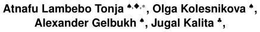
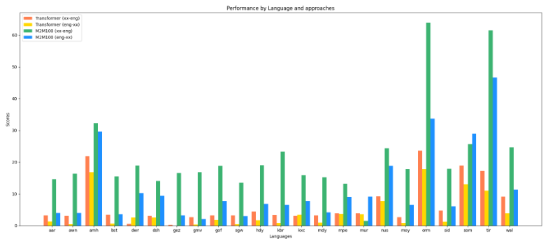
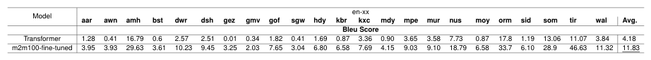
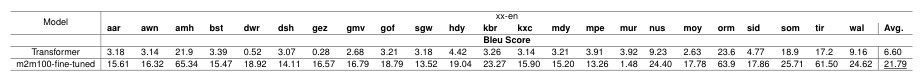

RAIL 2024Tafsiri ya mashine
EthioMT: Korasi Sambamba kwa Lugha za Ethiopia zenye Rasilimali Chache
Tafsiri ya mashine, haijakaguliwa na binadamu. Makala asili ndiyo toleo la rejeo; sentensi zilizopigiwa mstari ni zile ambazo ukaguzi wa kiotomatiki haukuwa na uhakika nazo.
Proceedings of the Fifth Workshop on Resources for African Indigenous Languages @ LREC-COLING 2024.
Tafsiri ya Ernst van Gassen (Arktos AI Lab), yenye leseni CC BY-NC 4.0 kama makala asili. Matumizi tena yanaruhusiwa kwa kutaja mwandishi, kwa matumizi yasiyo ya kibiashara tu. Waandishi asili hawajakagua wala kuidhinisha tafsiri hii.
Maandishi matupu ya kutumia tena, pamoja na leseni yake: Kiswahili · LESENI
Taasisi
♣ University of Colorado Colorado Springs, USA


Muhtasari
Utafiti wa hivi karibuni katika uchakataji wa lugha asilia (NLP) umepata utendaji wa kuvutia katika kazi kama vile tafsiri ya mashine (MT), uainishaji wa habari, na kujibu maswali katika lugha zenye rasilimali nyingi. Hata hivyo, utendaji wa MT bado hauridhishi kwa lugha zenye rasilimali chache. Hii inatokana na ukubwa mdogo wa korasi sambamba zinazopatikana katika lugha hizi, ikiwa korasi hizo zinapatikana kabisa. NLP katika lugha za Ethiopia inakabiliwa na matatizo yale yale kutokana na kutopatikana kwa seti za data zinazopatikana kwa umma kwa kazi za NLP, ikiwemo MT. Ili kusaidia jumuiya ya watafiti na kukuza utafiti kwa lugha za Ethiopia, tunatanguliza EthioMT - korasi mpya sambamba kwa lugha 15. Pia tunaunda kigezo kipya kwa kukusanya seti ya data kwa lugha zilizofanyiwa utafiti zaidi nchini Ethiopia. Tunatathmini korasi mpya iliyokusanywa na seti ya data ya kigezo kwa lugha 23 za Ethiopia kwa kutumia mbinu za Transformer na uboreshaji modeli.
Maneno Muhimu
Korasi sambamba, EthioMT, tafsiri ya mashine, lugha yenye rasilimali chache, lugha za Ethiopia
1. Utangulizi
Katika miaka ya hivi karibuni, kutokana na maendeleo katika mbinu za Ujifunzajikina kama vile utengenezaji wa Transformer (Vaswani et al., 2017), tafsiri ya mashine (MT), kazi ya msingi katika uchakataji wa lugha asilia (NLP), imeonyesha maboresho makubwa katika upanuzi na ubora wa tafsiri (Wang et al., 2021). Inajulikana vyema kwamba hitaji muhimu la kuendeleza MT ni upatikanaji wa korasi sambamba. Upatikanaji wa korasi sambamba pia ni muhimu ili kuwezesha ujumuishaji wa lugha katika programu za MT kama vile Google Translation, Bing, na DeepL (Van der Meer, 2019). Idadi kubwa ya lugha duniani hazina ufikiaji wa zana kama hizo za tafsiri kwa kuwa ni lugha chache tu zenye rasilimali nyingi zimepokea uangalizi mkubwa (Tonja et al., 2023b).
Miundo na mbinu nyingi zilizotengenezwa kwa ajili ya lugha zenye rasilimali nyingi hazifanyi kazi vizuri katika mazingira ya rasilimali chache (Costa-jussà et al., 2022; Tonja et al., 2023b; King, 2015). Lugha zenye rasilimali chache pia zimetaabika kutokana na miundo ya teknolojia ya lugha (Joshi et al., 2019; Tonja et al., 2022). Kuunda mbinu mpya zenye nguvu kwa ajili ya programu za lugha ni changamoto wakati rasilimali ni chache na kiasi kidogo tu cha hata data isiyo na lebo kinapatikana. Tatizo linazidishwa wakati hakuna seti ya data sambamba iliyopo kwa lugha maalum (Joshi et al., 2020; Ranathunga et al., 2023; Adebara na Abdul-Mageed, 2022).
Ethiopia ni nchi inayojitokeza kwa utofauti wake wa ajabu wa kitamaduni na wa lugha, ikiwa na zaidi ya lugha 85 zinazozungumzwa (Woldemariam, 2007). Ni lugha chache tu za Ethiopia zimepokea uangalizi katika eneo la utafiti wa NLP na uundaji wa matumizi. Lugha nyingi zimeachwa nyuma kutokana na ukomo wa rasilimali (Costa-jussà et al., 2022; Tonja et al., 2023b). Ni vigumu kupata seti za data zinazopatikana kwa umma kwa ajili ya lugha za Ethiopia ili kuendeleza utafiti wa NLP kwa sababu watafiti wengi hawafanyi seti zao za data kupatikana kwa umma (Tonja et al., 2023b). Kutopatikana kwa seti za data za kigezo na matokeo kwa kazi za NLP, ikiwa ni pamoja na MT, hufanya utafiti kwa wageni na pande zenye nia kuwa mgumu sana. Hili kwa wazi ni gumu zaidi kwa lugha zenye data chache katika aina mbalimbali za kidijitali.
Makala haya yanatanguliza EthioMT: korasi sambamba ya lugha za Ethiopia zenye rasilimali chache zilizooanishwa na Kiingereza, na seti ya data ya kigezo na matokeo ya majaribio kwa lugha 23 za Ethiopia. Michango yetu ni ifuatayo: (1) Tunaunda korasi mpya sambamba ya lugha 15 za Ethiopia zilizooanishwa na Kiingereza. (2) Tunawasilisha seti ya kwanza ya vigezo vya data na matokeo kwa lugha za Ethiopia (Amharic, Afaan Oromo, Tigrinya na Kisomali) zenye rasilimali za kutosha. (3) Tunatathmini utendaji wa MT kwa kutumia korasi mpya na kuwasilisha matokeo ya kigezo. (4) Tunafanya korasi sambamba kuwa Programu huria ili kukuza ushirikiano na kuwezesha utafiti na maendeleo katika lugha za Kiethiopia zenye rasilimali chache.
2. Kazi Zinazohusiana
Lugha za Kiethiopia zinaainishwa kama zenye rasilimali chache kutokana na kutopatikana kwa rasilimali kwa kazi za NLP, ikiwa ni pamoja na MT (Tonja et al., 2023b). Ingawa MT ni eneo lililotafitiwa vizuri zaidi kwa lugha za Kiethiopia ikilinganishwa na matumizi mengine ya NLP (Tonja et al., 2023b), ni lugha chache tu zimepokea umakini wa kutosha kutoka kwa watafiti.
Lugha Zilizotafitiwa Ikilinganishwa na lugha nyingine za Kiethiopia, lugha zifuatazo zimepokea umakini mkubwa kutoka kwa watafiti. Hata hivyo, korasi zilizokusanywa hazipatikani katika eneo moja. Ni vigumu kupata seti za data za kigezo katika lugha hizi na seti za data na matokeo yanayohusiana ili kuzalisha tena na kulinganisha mbinu za MT.
Kiamhara - Watafiti wamekusanya seti za data sambamba na kupendekeza mbinu tofauti za MT kwa tafsiri ya Kiamhara-Kiingereza (Kenny, 2018; Teshome na Besacier, 2012; Hadgu et al., 2020; Ashengo et al., 2021; Biadgligne na Smaïli, 2022; Belay et al., 2022; Gezmu et al., 2021b,a; Biadgligne na Smaïli, 2021).
Afaan Oromo - Vilevile, kumekuwa na majaribio ya kuunda seti za data za MT za Afaan Oromo-Kiingereza (Meshesha na Solomon, 2018; Solomon et al., 2017; Adugna na Eisele, 2010; Chala et al., 2021; Gemechu na Kanagachidambaresan, 2021).
Kitigrinya - Kwa MT ya Kitigrinya-Kiingereza, watafiti wamejaribu kuunda seti za data sambamba (Tedla na Yamamoto, 2016, 2017; Berihu et al., 2020; Azath na Kiros, 2020; Kidane et al., 2021).
MT ya lugha nyingi Baadhi ya watafiti wamejumuisha lugha za Ethiopia pamoja na lugha nyingine katika mifumo ya MT ya lugha nyingi. Lakew et al. (2020) walikusanya na kuunda matokeo ya vigezo kwa Lugha tano za Afrika, zikiwemo zile zilizotajwa hapo juu kutoka Ethiopia. Costa-jussà et al. (2022), Goyal et al. (2022) na Fan et al. (2021) walijumuisha lugha za Ethiopia katika mifano yao ya MT ya lugha nyingi na seti za majaribio za vigezo. Vegi et al. (2022) walikusanya seti ya data sambamba ya lugha nyingi kwa ajili ya Lugha za Afrika, ikiwemo Kiamhari na Afaan Oromo kutoka Ethiopia.
Lugha nyingine Kumekuwa na juhudi za kuunda na kukusanya seti za data za MT kwa lugha nyingine za Ethiopia. Kwa mfano, Tonja et al. (2021) waliwasilisha korasi sambamba kwa lugha nne za Kiethiopia zenye rasilimali chache (Wolaita, Gamo, Gofa, na Dawuro).
3. EthioMT
3.1. Mjadala wa Lugha
Katika sehemu hii, tunaorodhesha lugha zilizojumuishwa katika korasi ya EthioMT. Lugha zilizojumuishwa katika korasi ya EthioMT ni za familia za lugha za Afro-Asiatic na Nilo-Saharan.
3.1.1. Familia ya lugha ya Afro-Asiatic
Familia ya lugha ya Afro-Asiatic inajumuisha takriban lugha 250 zinazozungumzwa Afrika Kaskazini, sehemu za Afrika Kusini mwa Jangwa la Sahara, na Mashariki ya Kati. Lugha zinazohusika na familia hii zimepangwa katika vikundi vidogo sita: Berber, Chadic, Cushitic, Egyptian, Omotic, na Semitic (Epstein na Kole, 1998). EthioMT ina lugha zinazohusika na vikundi vidogo vya Omotic, Cushitic, na Semitic.
1) Lugha za Omotic ni kikundi cha lugha zinazozungumzwa kusini - magharibi mwa Ethiopia, katika eneo la Mto Omo. Hati ya Kige'ez hutumika kuandika baadhi ya lugha za Kiomoti na hati ya Kilatini kwa nyinginezo (Amha, 2017). Lugha zinazomilikiwa na kundi hili ambazo tulizijumuisha katika EthioMT zimetolewa hapa chini.
Kibasketo kinazungumzwa katika woreda maalum ya Basketo ya Jimbo la Kanda la Kusini mwa Ethiopia. Lugha ya Kibasketo pia inaitwa Basketto, Baskatta, Mesketo, Misketto, na Basketo-Dokka. Wazungumzaji wanaiita lugha hiyo "Masketo", huku majirani zao wakiita "Basketo". Lugha hiyo ina lahaja mbili, Doko (Dokko) na Dollo (Dollo).
Kidawuro ni lugha inayozungumzwa na takriban watu milioni 1.09 katika eneo la Dawro la Mkoa wa Watu wa Kusini-Magharibi mwa Ethiopia. Pia hujulikana kama Dauro, Dawragna, Dawrogna, Ometay, Cullo, au Kullo. Lugha hiyo ina lahaja nne: Konta, Kucha, Longkhai, na Yawngkon.
Lugha ya Gamo inazungumzwa na watu takriban milioni 1.63 katika Eneo la Gamo la Jimbo la Kusini mwa Ethiopia. Wazungumzaji huita lugha hiyo Gamotstso.
Gofa inarejelea lugha inayozungumzwa katika eneo la Gofa la Jimbo la Kanda la Ethiopia Kusini ikiwa na wazungumzaji takriban 392,000.
Kafa, pia inajulikana kama Kefa au Kafi noono, ni lugha ya Kiomoti ya Kaskazini inayozungumzwa nchini Ethiopia. Inazungumzwa na takriban watu 830,000 katika Eneo la Keffa katika Mkoa wa Watu wa Ethiopia Kusini Magharibi. Lugha hiyo inazungumzwa hasa ndani na karibu na mji wa Bonga.
Kimalé kinazungumzwa katika Mkoa wa Omo nchini Ethiopia. Watu wa Male wanadumisha lugha yao kwa nguvu licha ya kukabiliwa na shinikizo na lugha za nje.
Shakicho, inayojulikana pia kama Mocha, Shakacho, au Shekka, inazungumzwa katika Eneo la Sheka kusini-magharibi mwa Ethiopia. Inahusiana kwa karibu na Kafa. Maneno ya mkopo kutoka Majang na Kiamhara yanaathiri msamiati wa lugha hiyo.
Wolaytta ni lugha ya Kiomoti ya Kaskazini inayozungumzwa na watu wa Welayta katika Eneo la Wolayita nchini Ethiopia. Inakadiriwa kuwa watu milioni 2 wanazungumza Wolaytta.
2) Lugha za Kikushi zinazungumzwa hasa katika Pembe ya Afrika, ikijumuisha Djibouti, Eritrea, Ethiopia, Somalia, na Kenya (Comrie, 2002). Lugha za Kikushi hutumia hati ya Kilatini na Ge'ez. Lugha zinazomilikiwa na familia hii ambazo zimejumuishwa katika kundi la EthioMT zinajadiliwa hapa chini.
Kiafar kinazungumzwa na watu wa Kiafar nchini Ethiopia, Eritrea, na Djibouti. Pia inajulikana kama Afar Af, Afaraf, na Qafar af. Watu takriban milioni 1.5 wanazungumza Afar, ambayo ni lugha inayokaribia zaidi na lugha ya Saho.
Afaan Oromo, pia inajulikana kama Oromo, inazungumzwa na takriban watu milioni 37 nchini Ethiopia, Kenya, Somalia, na Misri. Ni lugha ya tatu kwa ukubwa barani Afrika na lugha kubwa zaidi katika kundi la Kikushi kwa upande wa wazungumzaji. Watu wa Oromo ni kabila kubwa zaidi nchini Ethiopia na wanachangia zaidi ya asilimia 40 ya idadi ya watu.

Jedwali 1: Lugha na maelezo ya seti ya data kwa korasi ya EthioMT. Inaonyesha lugha, familia za lugha, idadi ya wazungumzaji, kikoa, na ukubwa wa seti ya data iliyokusanywa. Katika safu ya kikoa Misc inaashiria korasi mchanganyiko iliyokusanywa kutoka vyanzo vya kidini, habari, na vinginevyo. Ukubwa ulio katika herufi nzito na kupigiwa mstari unaashiria seti ya data iliyokusanywa kutoka hazina tofauti na kazi zilizochapishwa na kuunganishwa kuwa seti moja ya data kwa lugha hiyo ili kuunda seti ya data ya kigezo.
Kiawngi ni lugha ya Kikushi ya Kati inayozungumzwa na watu wapatao 400,000 kaskazini-magharibi mwa Ethiopia. Pia inajulikana kama Awiya, Awi, Agaw, Agau, Agew, Agow, Awawar, na Damot. Wazungumzaji wengi wanaishi katika Eneo la Agew Awi la Mkoa wa Amhara. Kiawngi ni lugha ya Kiafro-Asia inayozungumzwa katika sehemu za Eneo la Metekel la Mkoa wa Benishangul-Gumuz.
Dashenech pia huitwa Dasenech, Daasanech, au Daasanaki. Watu wa Daasanach wanakizungumza nchini Ethiopia, Sudan Kusini, na Kenya. Watu wa Daasanach kimsingi wanaishi katika Bonde la Chini la Omo kusini-magharibi mwa Ethiopia, kando ya ufuo wa mashariki wa Ziwa Turkana nchini Kenya, na katika baadhi ya sehemu za Sudan Kusini.
Kihadiya kinazungumzwa na watu wa Hadiya wa Ethiopia. Lugha hiyo pia inajulikana kama Hadiyyisa, Hadiyigna, Adiya, Adea, Adiye, Hadia, Hadiya, na Hadya. Ni lugha ya Kikushi ya Nyanda za Juu Mashariki. Watu wa Hadiya ni kundi la kale la wenyeji katika sehemu ya kusini mwa Ethiopia. Kuna wazungumzaji milioni 1.4 wa lugha ya Hadiya, huku milioni 1.25 kati yao wakiizungumza kama lugha yao ya kwanza.
Korate ni lugha ya Kikushi ya Nyanda za Chini Mashariki inayozungumzwa na watu wa Konso kusini magharibi mwa Ethiopia. Ina takriban wazungumzaji asilia 500,000. Lugha hiyo ina lahaja tano: Duuro, Fasha, Karatti, Kholme, na Komso. Lahaja kuu mbili ni Fasha na Karatti. Konso inahusiana kwa karibu na Dirasha (inayojulikana pia kama Gidole). Inatumika kama "lugha ya biashara" au lingua franca nje ya eneo la watu wa Konso. Watu wa Konso ni kabila la Kikushi wanaoishi katika miji mikubwa kusini-kati mwa Ethiopia.
Sidama, au Sidaamu Afoo, ni lugha ya Kikushi inayozungumzwa na watu wa Sidama kusini mwa Ethiopia. Inatumia alfabeti ya Kilatini. Karibu watu milioni tisa wanazungumza Sidama. Ni lugha rasmi ya Sidama National Regional State (SNRS) na inatumika kama lugha ya kufundishia katika shule za msingi. Sidama ni tawi la familia ya Kikushi cha Mashariki cha Nyanda za Juu.
Kisomali ni lugha rasmi ya Somalia, inayozungumzwa na watu milioni 6.5. Pia inazungumzwa nchini Ethiopia, Djibouti, na Kenya. Jumla ya idadi ya wazungumzaji duniani kote inakadiriwa kuwa karibu milioni 22. Lugha yake ya karibu zaidi ni ile ya Ki-Oromo, inayozungumzwa katika sehemu fulani za Ethiopia na Kenya. Lugha nyingine zinazohusiana ni Afar na Saho.
3) Lugha za Kisemiti ni za jamii ndogo ya familia ya lugha ya Kiafrika-Kiasia, ikijumuisha Kiebrania, Kiaramu, Kiarabu, na Kiethiopia. Maandishi mengi yanayotumika kuandika lugha za Kisemiti ni abjad. Abjad inarejelea hati ya kialfabeti inayoacha baadhi au vokali zote. Lugha zinazomilikiwa na kundi hili tunazozichunguza zimetolewa hapa chini.
Kiamhara kinazungumzwa na Waamhara na maeneo mengine nchini Ethiopia. Ni lugha ya pili inayozungumzwa zaidi ya Kisemiti duniani, baada ya Kiarabu. Kiamhara ni lugha rasmi ya Ethiopia na imekuwa hivyo tangu karne ya 14. Pia inazungumzwa katika nchi nyingine, zikiwemo Eritrea, Kanada, Marekani, na Uswidi. Kiamhara kinaandikwa kwa kutumia grafimu ziitwazo fidal, ambazo maana yake ni "hati", "alfabeti", "herufi", au "kibambo".
Ge'ez ni lugha ya kale ya Kisemiti iliyoanzia Eritrea na kaskazini mwa Ethiopia. Ge'ez inaaminika kuwa na umri wa takriban miaka 5,000, na kuifanya kuwa ya zamani zaidi kuliko Kiebrania na lugha nyingine za Kisemiti za Kaskazini. Makanisa ya Kiorthodoksi na Kikatoliki nchini Eritrea na Ethiopia bado yanaitumia kama lugha ya kiliturujia. Ge'ez ilitoweka kama lugha asilia zaidi ya miaka 1,000 iliyopita. Iliandikwa kwa mifumo miwili: abjadi na baadaye abugida.
Kigurage kinazungumzwa na watu wa Gurage katikati mwa Ethiopia. Lugha za Kigurage zinaandikwa kwa kutumia hati ya Ge'ez, ambayo pia hutumika kwa lugha nyingine za Ethiopia. Lugha za Kigurage si mara zote zinaelewekana kwa pande zote.
Kitigrinya kinazungumzwa na watu wapatao milioni 9, hasa nchini Eritrea na Ethiopia. Huandikwa kwa hati ya Ge'ez, ambayo pia hutumika kwa Kiamhariki, lakini sarufi na matumizi ya Kitigrinya hutofautiana kwa kiasi kikubwa na Kiamhariki.
3.1.2. Familia ya lugha za Nilo-Sahara
Lugha za Kinilo-Sahara ni kundi la lugha zinazounda mojawapo ya familia nne za lugha katika bara la Afrika (Dimmendaal et al., 2019). Familia hiyo inashughulikia maeneo makuu mashariki na kaskazini mwa Ziwa Viktoria katika Afrika Mashariki na inaenea kuelekea magharibi hadi Bonde la Niger huko Mali, Afrika Magharibi (Comrie, 2002). Kinilo-Sahara kinaunda familia kumi za lugha tofauti na zilizojitenga, zikiwemo za Kisudani cha Mashariki.
Lugha za Kisudani cha Mashariki ni kundi la familia kumi za lugha zinazounda tawi la familia ya lugha ya Kinilo-Sahara. Lugha za Sudani ya Mashariki zinazungumzwa kutoka kusini mwa Misri hadi kaskazini mwa Tanzania. Lugha zilizotumika katika utafiti wetu na kundi hili zimeorodheshwa hapa chini.
Kimajang huzungumzwa na watu wa Majangir wa Ethiopia. Ni mwanachama wa kundi la lugha za Kisurmic, lakini ndiyo iliyojitenga zaidi katika kundi hilo. Inaainishwa kama sehemu ya tawi la Mashariki mwa Sudan la familia ya lugha za Kinilo-Sahara. Watu wa Majang wanaishi katika makazi yaliyotawanyika kusini-magharibi mwa Ethiopia. Wanaishi karibu na maeneo ya mijini ya Tepi na Mett'i, kusini-magharibi mwa Mizan Teferi na kuelekea Gambela.
Kimurle kinazungumzwa na watu wa Murle katika Sudan Kusini na Ethiopia. Lugha hiyo pia inajulikana kama Ajibba, Beir, Merule, Mourle, na Murule. Lugha ya Kimurle ni sehemu ya familia ya lugha za Kisurmic na ina lahaja tatu: Lotilla, Boma, na Olam. Idadi ya watu wa Murle ni kati ya 300,000 na 400,000. Wanaishi katika Kaunti ya Pibor iliyoko kusini-mashariki mwa Upper Nile (Jonglei)
Nuer au Thok Naath ni lugha ya Kiniloti ya Magharibi inayozungumzwa na watu wa Nuer wa Sudan Kusini na magharibi mwa Ethiopia. Lugha hiyo imeandikwa kwa alfabeti yenye msingi wa Kilatini, sawa na Dinka na Atuot. Zaidi ya watu 900,000 wanazungumza lugha ya Nuer katika jamii za ughaibuni katika Afrika Mashariki, Australia, na Marekani.
4. Seti ya Data
4.1. Ukusanyaji wa Seti ya Data
Tulikusanya seti za data kwa lugha 16 kutoka vikoa vya kidini kutoka kwenye tovuti. Pamoja na hayo, kwa Kiamhariki, Afaan Oromo, Kisomali, na Kitigrinya, tulikusanya seti za data zilizopo hadharani (Abate et al., 2019; Lakew et al., 2020; Vegi et al., 2022) kutoka vikoa tofauti ili kuunda seti moja ya data ya kipimo kwa kila lugha. Kwa lugha za Dawuro, Gamo, Gofa, na Wolaita, tulitumia seti ya data ya Tonja et al. (2021) kuunda matokeo ya kipimo kwa miundo iliyoboreshwa. Kitambazaji cha wavuti kilitumika kwa kila makala kutoa data ya Biblia kutoka kwenye tovuti baada ya kutambua muundo wa nyaraka za wavuti. Maktaba za Python kama vile requests, regular expression (RE), na Beautiful Soup (BS) zilitumika kuchanganua muundo wa tovuti na kutoa maudhui ya makala kutoka kwa URL fulani.
4.2. Upangaji wa Sentensi
Baada ya kukusanya korasi kwa ajili ya lugha hizo, tulipanga kila sentensi ya lugha za Ethiopia kwa sentensi katika data ya Kiingereza ili kuandaa seti ya data kwa ajili ya jaribio la MT. Tulifuata utaratibu sawa na wa Tonja et al. (2023a) kufanya upangaji wa sentensi.
4.3. Uchakataji wa Awali wa Seti ya Data
Baada ya kupanga maandiko ya lugha za Ethiopia na tafsiri zake sawa katika Kiingereza, tulichakata korasi kabla ya kuigawanya kwa ajili ya majaribio yetu. Hatua za uchakataji wa awali zilijumuisha kuondoa alama za nambari na herufi maalum, n.k. Pia tuliondoa sentensi sambamba zenye maneno chini ya matano. Kwa majaribio ya msingi, tuligawanya korasi iliyochakatwa mapema katika seti za mafunzo, seti ya uthibitisho, na seti za majaribio kwa uwiano wa 70:10:20, mtawalia. Jedwali la 1 linaonyesha taarifa za kina kuhusu lugha zilizochaguliwa, familia za lugha, kikoa, na ukubwa wa seti yao ya data.
5. Miundo ya Msingi
Tulitumia mbinu mbili zifuatazo kutathmini utumikaji wa korasi mpya iliyokusanywa na seti yetu mpya ya data ya kigezo kwa lugha nne (amh, orm, som, na tir) za Ethiopia.
Transformer ya msingi ni aina ya usanifu wa mtandao wa neva ulioletwa kwa mara ya kwanza katika makala ya Attention Is All You Need (Vaswani et al., 2017). Ubunifu mkuu wa usanifu wa Transformer ni utaratibu wa umakini, unaoruhusu mtandao kuzingatia kwa kuchagua sehemu tofauti za mfuatano wa pembejeo wakati wa kufanya utabiri. Hii inatofautisha mitandao ya neva ya kawaida inayojirudia (RNNs), ambayo huchakata pembejeo kwa mfuatano na inakabiliwa na tatizo la upotevu wa mwinuko.
Katika usanifu wa Transformer, tabaka nyingi za uangalizi binafsi na mitandao ya neva ya mbele hushughulikia vipengele vya mlolongo wa ingizo kwa sambamba. Kila tabaka linaweza kuchukuliwa kuwa "block" ambacho hupokea pato la tabaka lililotangulia kama pembejeo na kutumia mabadiliko yake kwalo. Utaratibu wa uangalizi binafsi huwezesha mtandao kupima umuhimu wa kila kipengele katika mfuatano wa pembejeo wakati wa kufanya utabiri. Kinyume chake, mitandao ya kusambaza mbele husaidia kunasa uhusiano usio wa mstari kati ya vipengele.
Transformer ni mbinu za kisasa zaidi zinazotumika sana katika kazi za NLP kama vile MT, ufupisho wa maandishi, na uchambuzi wa hisia. Jedwali la 3 linaonyesha vigezo vilivyowekwa kwa ajili ya modeli ya Transformer.

Jedwali la 2: Vigezo vilivyotumika kwa mafunzo ya Transformer
Uboreshaji modeli ni mchakato wa kutumia modeli ya MT iliyofunzwa awali na kuirekebisha kwa kazi maalum ya utafsiri, kama vile kutafsiri kati ya jozi fulani ya lugha au katika kikoa maalum. Mchakato wa Uboreshaji modeli unahusisha kuchukua modeli iliyofunzwa awali, ambayo tayari imejifunza uwakilishi wa maneno na vishazi kutoka kwenye korasi kubwa ya maandishi, na kuifunza kwenye seti ndogo ya data ya mifano mahususi ya kazi. Hii inahusisha kusasisha vigezo vya modeli iliyofunzwa awali ili kunasa vyema mifumo na miundo katika kazi lengwa ya tafsiri.
Uboreshaji modeli unaweza kusaidia katika MT kwa sababu unaruhusu modeli iliyofunzwa awali kuzoea kazi mpya haraka bila kulazimika kufunza modeli mpya kutoka mwanzo. Hii ni ya manufaa hasa wakati wa kufanya kazi na data chache au kunapokuwa na haja ya kuzoea haraka mahitaji yanayobadilika ya tafsiri. Tulitumia M2M100-48, modeli ya lugha nyingi ya kisimbuzi-kifumbuzi (seq-to-seq) iliyofunzwa kwa tafsiri ya lugha nyingi-kwa-nyingi (Fan et al., 2021). Tulitumia modeli yenye vigezo vya 48M kutokana na vikwazo vya rasilimali za kompyuta. Tulitumia vigezo vifuatavyo kuboresha modeli ya m2m100.

Jedwali la 3: Vigezo vilivyotumika kwa Uboreshaji modeli wa m2m100-48
6. Matokeo na Majadiliano
Tulitathmini mbinu zilizo hapo juu katika tafsiri ya pande mbili kutoka lugha za Ethiopia kwenda Kiingereza na Kutoka Kiingereza kwenda lugha za Ethiopia. Tulitumia vipimo vya tathmini vya Sacrebleu (Post, 2018) kutathmini modeli za tafsiri. Jedwali la 4 na 5 linaonyesha matokeo ya tafsiri katika pande zote mbili.
6.1. Kutumia Kiingereza kama lugha chanzo
Jedwali la 4 linaonyesha matokeo ya tafsiri kutoka Kiingereza kwenda lugha za Ethiopia. Tunapolinganisha matokeo ya mbinu hizo mbili, tunaona utendakazi duni wakati wa kutumia Transformer badala ya Uboreshaji modeli wa m2m100. Kama tunavyoweza kuona kutoka kwenye matokeo, utendakazi wa modeli ya Transformer pia unatofautiana katika masafa ya 0.01 - 17.8 spBLEU kutoka lugha hadi lugha kwa ukubwa tofauti wa korasi. Hii inaonyesha kuwa modeli ya tafsiri ya lugha mbili iliyofunzwa kutoka mwanzo inafanya kazi vibaya kwa mafunzo ya lugha yenye rasilimali chache ikilinganishwa na mbinu nyingine kama Uboreshaji modeli ya modeli za tafsiri za lugha nyingi. Uboreshaji modeli ya modeli ya lugha nyingi unaonyesha matokeo bora kuliko modeli iliyojengwa kutoka mwanzo kwa tafsiri ya Kiingereza kwenda lugha za Ethiopia. Katika mbinu ya Uboreshaji modeli, tunaweza pia kuona tofauti ya wazi ya alama kati ya lugha zenye korasi kubwa (amh, orm, tir, som) na nyingine (k.m. awn, aar, bst, n.k.). Hii inaonyesha kuwa Uboreshaji modeli wa modeli ya lugha nyingi utafanya kazi vizuri kwa lugha zenye ukubwa mkubwa zaidi wa korasi (k.m. orm, amh) kuliko lugha zenye ukubwa mdogo wa korasi (k.m. awn, bst, n.k.). Tunaweza pia kuona kutoka kwa matokeo kuwa mbinu zote mbili zinafanya kazi vizuri kwa lugha zenye maandishi ya vikoa mchanganyiko ikilinganishwa na kikoa kimoja (dini).

Kielelezo 1: Matokeo ya tafsiri ya kipimo kwa mbinu za Transformer na zilizoboreshwa katika mwelekeo wote (kutoka na kwenda Kiingereza/lugha za Ethiopia)

Jedwali 4: Matokeo ya tafsiri ya kipimo kutoka Kiingereza kwenda lugha za Ethiopia

Jedwali 5: Matokeo ya tafsiri ya kipimo kutoka lugha za Ethiopia kwenda Kiingereza
6.2. Kutumia Kiingereza kama lugha lengwa
Jedwali la 5 linaonyesha matokeo ya tafsiri wakati wa kutumia Kiingereza kama lugha lengwa. Vivyo hivyo, kama tunavyoweza kuona kutoka kwa matokeo, modeli ya Transformer inafanya vibaya ikilinganishwa na modeli iliyorekebishwa vizuri wakati wa kutafsiri kutoka lugha za Ethiopia kwenda Kiingereza. Ikilinganishwa na Jedwali la 4, kutafsiri kwenda Kiingereza kunaonyesha maboresho katika modeli ya Transformer kwa lugha zinazofanana. Tunaona kwamba modeli iliyorekebishwa vizuri inaonyesha alama bora za Bleu wakati wa kutafsiri kwenda Kiingereza kuliko wakati wa kutafsiri kwenda lugha za Ethiopia. Matokeo yanaonyesha kwamba lugha zilizo na seti kubwa za data zina utendaji wa juu zaidi. Hii inaonyesha kwamba modeli zote mbili zinaonyesha maboresho wakati wa kutafsiri kutoka Ethiopia kwenda Kiingereza, wakati wa kutafsiri kutoka Kiingereza kwenda lugha za Ethiopia, modeli inakabiliwa na ugumu wa tafsiri.
7. Hitimisho na Kazi za Baadaye
Makala hii inawasilisha EthioMT, korasi mpya ya MT kwa lugha za Ethiopia zenye rasilimali chache zilizooanishwa na Kiingereza, na inajadili majaribio ya MT pamoja na matokeo.
Pia tunawasilisha seti mpya ya data ya kigezo kwa lugha nne za Ethiopia zilizokusanywa kutoka hazina za umma. Tulipata matokeo ya kigezo kwa mgawanyo mpya wa seti za mafunzo, uthibitishaji, na majaribio na tukatathmini korasi mpya na seti mpya ya data ya kigezo kwa kutumia Transformer na Uboreshaji modeli wa mifano ya tafsiri ya lugha nyingi. Kutoka kwa mbinu hizo mbili, uboreshaji modeli wa mfano wa lugha nyingi ulifanya vizuri zaidi kuliko mbinu ya Transformer katika pande zote mbili za tafsiri.
Katika siku zijazo, tutafanya kazi ili kuongeza ukubwa wa korasi za lugha zenye rasilimali chache kwa kutoa maandishi kutoka nyaraka zilizochanganuliwa na vyanzo tofauti. Aidha, tutatathmini mbinu tofauti za MT kwa lugha zenye rasilimali chache ili kuboresha utendaji.
Maelezo
∗ Kazi iliyofanywa wakati wa mafunzo ya kazi katika Chuo Kikuu cha Colorado Colorado Springs.
1 https://www.bible.com/
8. Marejeo
Andargachew Mekonnen Gezmu, Andreas Nürnberger, and Tesfaye Bayu Bati. 2021a. Extended parallel corpus for amharic-english machine translation. arXiv preprint arXiv:2104.03543.
Andargachew Mekonnen Gezmu, Andreas Nürnberger, and Tesfaye Bayu Bati. 2021b. Neural machine translation for amharic-english translation. In ICAART (1), pages 526-532.
Angela Fan, Shruti Bhosale, Holger Schwenk, Zhiyi Ma, Ahmed El-Kishky, Siddharth Goyal, Mandeep Baines, Onur Celebi, Guillaume Wenzek, Vishrav Chaudhary, et al. 2021. Beyond english-centric multilingual machine translation. The Journal of Machine Learning Research, 22(1):4839-4886.
Ashish Vaswani, Noam Shazeer, Niki Parmar, Jakob Uszkoreit, Llion Jones, Aidan N Gomez, Łukasz Kaiser, and Illia Polosukhin. 2017. Attention is all you need. Advances in neural information processing systems, 30.
Asmelash Teka Hadgu, Adam Beaudoin, and Abel Aregawi. 2020. Evaluating amharic machine translation. arXiv preprint arXiv:2003.14386.
Atnafu Lambebo Tonja, Christian MaldonadoSifuentes, David Alejandro Mendoza Castillo, Olga Kolesnikova, Noé Castro-Sánchez, Grigori Sidorov, and Alexander Gelbukh. 2023a. Parallel corpus for indigenous language translation: Spanishmazatec and spanish-mixtec. arXiv preprint arXiv:2305.17404.
Atnafu Lambebo Tonja, Michael Melese Woldeyohannis, and Mesay Gemeda Yigezu. 2021. A parallel corpora for bi-directional neural machine translation for low resourced ethiopian languages. In 2021 International Conference on Information and Communication Technology for Development for Africa (ICT4DA), pages 71-76. IEEE.
Atnafu Lambebo Tonja, Olga Kolesnikova, Muhammad Arif, Alexander Gelbukh, and Grigori Sidorov. 2022. Improving neural machine translation for low resource languages using mixed training: The case of ethiopian languages. In Mexican International Conference on Artificial Intelligence, pages 30-40. Springer.
Atnafu Lambebo Tonja, Tadesse Destaw Belay, Israel Abebe Azime, Abinew Ali Ayele, Moges Ahmed Mehamed, Olga Kolesnikova, and Seid Muhie Yimam. 2023b. Natural language processing in ethiopian languages: Current state, challenges, and opportunities. arXiv preprint arXiv:2303.14406.
Azeb Amha. 2017. The omotic language family. Cambridge University Press.
Benjamin Philip King. 2015. Practical Natural Language Processing for Low-Resource Languages. Ph.D. thesis.
Bernard Comrie. 2002. Languages of the world: who speaks what. In An encyclopedia of language, pages 529-543. Routledge.
Dorothy Kenny. 2018. Machine translation. In The Routledge handbook of translation and philosophy, pages 428-445. Routledge.
Ebisa A Gemechu and GR Kanagachidambaresan. 2021. Machine learning approach to english-afaan oromo text-text translation: Using attention based neural machine translation. In 2021 4th International Conference on Computing and Communications Technologies (ICCCT), pages 80-85. IEEE.
Edmund L Epstein and Robert Kole. 1998. The language of African literature. Africa World Press.
Gerrit J Dimmendaal, Colleen Ahland, Angelika Jakobi, and Constance Kutsch Lojenga. 2019. Linguistic features and typologies in languages commonly referred to as 'nilo-saharan'. Cambridge Handbook of African Languages, pages 326-381.
Haifeng Wang, Hua Wu, Zhongjun He, Liang Huang, and Kenneth Ward Church. 2021. Progress in machine translation. Engineering.
Hirut Woldemariam. 2007. The challenges of mothertongue education in ethiopia: The case of north omo area. Language Matters, 38(2):210-235.
Ife Adebara and Muhammad Abdul-Mageed. 2022. Towards afrocentric NLP for African languages: Where we are and where we can go. In Proceedings of the 60th Annual Meeting of the Association for Computational Linguistics (Volume 1: Long Papers), pages 3814-3841, Dublin, Ireland. Association for Computational Linguistics.
Lidia Kidane, Sachin Kumar, and Yulia Tsvetkov. 2021. An exploration of data augmentation techniques for improving english to tigrinya translation. arXiv preprint arXiv:2103.16789.
M Azath and Tsegay Kiros. 2020. Statistical machine translator for english to tigrigna translation. Int. J. Sci. Technol. Res, 9(1):2095-2099.
Marta R Costa-jussà, James Cross, Onur Çelebi, Maha Elbayad, Kenneth Heafield, Kevin Heffernan, Elahe Kalbassi, Janice Lam, Daniel Licht, Jean Maillard, et al. 2022. No language left behind: Scaling human-centered machine translation. arXiv preprint arXiv:2207.04672.
Matt Post. 2018. A call for clarity in reporting BLEU scores. In Proceedings of the Third Conference on Machine Translation: Research Papers, pages 186-191, Belgium, Brussels. Association for Computational Linguistics.
Million Meshesha and Yitayew Solomon. 2018. English-afaan oromo statistical machine translation. International Journal of Computational Linguistic (IJCL), 9(1).
Mulu Gebreegziabher Teshome and Laurent Besacier. 2012. Preliminary experiments on english-amharic statistical machine translation. In Spoken Language Technologies for Under-Resourced Languages.
Naman Goyal, Cynthia Gao, Vishrav Chaudhary, Peng-Jen Chen, Guillaume Wenzek, Da Ju, Sanjana Krishnan, Marc'Aurelio Ranzato, Francisco Guzmán, and Angela Fan. 2022. The flores-101 evaluation benchmark for low-resource and multilingual machine translation. Transactions of the Association for Computational Linguistics, 10:522-538.
Pavanpankaj Vegi, J Sivabhavani, Biswajit Paul, Abhinav Mishra, Prashant Banjare, KR Prasanna, and Chitra Viswanathan. 2022. Webcrawl african: A multilingual parallel corpora for african languages. In Proceedings of the Seventh Conference on Machine Translation (WMT), pages 1076-1089.
Pratik Joshi, Christain Barnes, Sebastin Santy, Simran Khanuja, Sanket Shah, Anirudh Srinivasan, Satwik Bhattamishra, Sunayana Sitaram, Monojit Choudhury, and Kalika Bali. 2019. Unsung challenges of building and deploying language technologies for low resource language communities. arXiv preprint arXiv:1912.03457.
Pratik Joshi, Sebastin Santy, Amar Budhiraja, Kalika Bali, and Monojit Choudhury. 2020. The state and fate of linguistic diversity and inclusion in the nlp world. arXiv preprint arXiv:2004.09095.
Sisay Adugna and Andreas Eisele. 2010. English-oromo machine translation: An experiment using a statistical approach. In Proceedings of the Seventh International Conference on Language Resources and Evaluation (LREC'10).
Sisay Chala, Bekele Debisa, Amante Diriba, Silas Getachew, Chala Getu, and Solomon Shiferaw. 2021. Crowdsourcing parallel corpus for english-oromo neural machine translation using community engagement platform. arXiv preprint arXiv:2102.07539.
Solomon Teferra Abate, Michael Melese, Martha Yifiru Tachbelie, Million Meshesha, Solomon Atinafu, Wondwossen Mulugeta, Yaregal Assabie, Hafte Abera, Biniyam Ephrem, Tewodros Gebreselassie, et al. 2019. English-ethiopian languages statistical machine translation. In Proceedings of the 2019 Workshop on Widening NLP, pages 27-30.
Surafel M Lakew, Matteo Negri, and Marco Turchi. 2020. Low resource neural machine translation: A benchmark for five african languages. arXiv preprint arXiv:2003.14402.
Surangika Ranathunga, En-Shiun Annie Lee, Marjana Prifti Skenduli, Ravi Shekhar, Mehreen Alam, and Rishemjit Kaur. 2023. Neural machine translation for low-resource languages: A survey. ACM Computing Surveys, 55(11):1-37.
Tadesse Destaw Belay, Atnafu Lambebo Tonja, Olga Kolesnikova, Seid Muhie Yimam, Abinew Ali Ayele, Silesh Bogale Haile, Grigori Sidorov, and Alexander Gelbukh. 2022. The effect of normalization for bi-directional amharic-english neural machine translation. In 2022 International Conference on Information and Communication Technology for Development for Africa (ICT4DA), pages 84-89. IEEE.
Jaap Van der Meer. 2019. Translation technology–past, present and future. The Bloomsbury companion to language industry studies, pages 285-310.
Yeabsira Asefa Ashengo, Rosa Tsegaye Aga, and Surafel Lemma Abebe. 2021. Context based machine translation with recurrent neural network for english-amharic translation. Machine Translation, 35(1):19-36.
Yemane Tedla and Kazuhide Yamamoto. 2016. The effect of shallow segmentation on english-tigrinya statistical machine translation. In 2016 International Conference on Asian Language Processing (IALP), pages 79-82. IEEE.
Yemane Tedla and Kazuhide Yamamoto. 2017. Morphological segmentation for english-to-tigrinya statistical machinetranslation. Int. J. Asian Lang. Process, 27(2):95-110.
Yitayew Solomon, Million Meshesha, and Wendewesen Endale. 2017. Optimal alignment for bidirectional afaan oromo-english statistical machine translation. vol, 3:73-77.
Yohanens Biadgligne and Kamel Smaïli. 2021. Parallel corpora preparation for english-amharic machine translation. In Advances in Computational Intelligence: 16th International Work-Conference on Artificial Neural Networks, IWANN 2021, Virtual Event, June 16-18, 2021, Proceedings, Part I 16, pages 443-455. Springer.
Yohannes Biadgligne and Kamel Smaïli. 2022. Offline corpus augmentation for english-amharic machine translation. In 2022 5th International Conference on Information and Computer Technologies (ICICT), pages 128-135. IEEE.
Zemicheal Berihu, Gebremariam Mesfin Assres, Mulugeta Atsbaha, and Tor-Morten Grønli. 2020. Enhancing bi-directional english-tigrigna machine translation using hybrid approach. In Norsk IKT-konferanse for forskning og utdanning, 1.
English na Kiswahili
EthioMT: Parallel Corpus for Low-resource Ethiopian Languages
EthioMT: Korasi Sambamba kwa Lugha za Ethiopia zenye Rasilimali Chache
Affiliations
♣ University of Colorado Colorado Springs, USA
Taasisi
♣ University of Colorado Colorado Springs, USA
Abstract
Muhtasari
Recent research in natural language processing (NLP) has achieved impressive performance in tasks such as machine translation (MT), news classification, and question-answering in high-resource languages. However, the performance of MT leaves much to be desired for low-resource languages. This is due to the smaller size of available parallel corpora in these languages, if such corpora are available at all. NLP in Ethiopian languages suffers from the same issues due to the unavailability of publicly accessible datasets for NLP tasks, including MT. To help the research community and foster research for Ethiopian languages, we introduce EthioMT - a new parallel corpus for 15 languages. We also create a new benchmark by collecting a dataset for better-researched languages in Ethiopia. We evaluate the newly collected corpus and the benchmark dataset for 23 Ethiopian languages using transformer and fine-tuning approaches.
Utafiti wa hivi karibuni katika uchakataji wa lugha asilia (NLP) umepata utendaji wa kuvutia katika kazi kama vile tafsiri ya mashine (MT), uainishaji wa habari, na kujibu maswali katika lugha zenye rasilimali nyingi. Hata hivyo, utendaji wa MT bado hauridhishi kwa lugha zenye rasilimali chache. Hii inatokana na ukubwa mdogo wa korasi sambamba zinazopatikana katika lugha hizi, ikiwa korasi hizo zinapatikana kabisa. NLP katika lugha za Ethiopia inakabiliwa na matatizo yale yale kutokana na kutopatikana kwa seti za data zinazopatikana kwa umma kwa kazi za NLP, ikiwemo MT. Ili kusaidia jumuiya ya watafiti na kukuza utafiti kwa lugha za Ethiopia, tunatanguliza EthioMT - korasi mpya sambamba kwa lugha 15. Pia tunaunda kigezo kipya kwa kukusanya seti ya data kwa lugha zilizofanyiwa utafiti zaidi nchini Ethiopia. Tunatathmini korasi mpya iliyokusanywa na seti ya data ya kigezo kwa lugha 23 za Ethiopia kwa kutumia mbinu za Transformer na uboreshaji modeli.
Keywords
Maneno Muhimu
Parallel corpus, EthioMT, Machine Translation, low resource language, Ethiopian languages
Korasi sambamba, EthioMT, tafsiri ya mashine, lugha yenye rasilimali chache, lugha za Ethiopia
1. Introduction
1. Utangulizi
In recent years, due to advances in deep learning approaches such as the development of transformers (Vaswani et al., 2017), machine translation (MT), a core task in natural language processing (NLP), has shown dramatic improvements in terms of coverage and translation quality (Wang et al., 2021). It is well-known that a critical requirement for advancing MT is the availability of parallel corpora. The availability of parallel corpora is also necessary to facilitate the incorporation of languages in MT applications like Google Translation, Bing, and DeepL (Van der Meer, 2019). The majority of the languages in the world do not have access to such translation tools since only a few high-resource languages have received significant attention (Tonja et al., 2023b).
Katika miaka ya hivi karibuni, kutokana na maendeleo katika mbinu za Ujifunzajikina kama vile utengenezaji wa Transformer (Vaswani et al., 2017), tafsiri ya mashine (MT), kazi ya msingi katika uchakataji wa lugha asilia (NLP), imeonyesha maboresho makubwa katika upanuzi na ubora wa tafsiri (Wang et al., 2021). Inajulikana vyema kwamba hitaji muhimu la kuendeleza MT ni upatikanaji wa korasi sambamba. Upatikanaji wa korasi sambamba pia ni muhimu ili kuwezesha ujumuishaji wa lugha katika programu za MT kama vile Google Translation, Bing, na DeepL (Van der Meer, 2019). Idadi kubwa ya lugha duniani hazina ufikiaji wa zana kama hizo za tafsiri kwa kuwa ni lugha chache tu zenye rasilimali nyingi zimepokea uangalizi mkubwa (Tonja et al., 2023b).
Most models and methods developed for high-resource languages do not work well in low-resource settings (Costa-jussà et al., 2022; Tonja et al., 2023b; King, 2015). Low-resource languages have also suffered from language technology designs (Joshi et al., 2019; Tonja et al., 2022). Creating powerful novel methods for language applications is challenging when resources are limited and only a small amount of even unlabeled data is available. The problem is exacerbated when no parallel dataset exists for specific languages (Joshi et al., 2020; Ranathunga et al., 2023; Adebara and Abdul-Mageed, 2022).
Miundo na mbinu nyingi zilizotengenezwa kwa ajili ya lugha zenye rasilimali nyingi hazifanyi kazi vizuri katika mazingira ya rasilimali chache (Costa-jussà et al., 2022; Tonja et al., 2023b; King, 2015). Lugha zenye rasilimali chache pia zimetaabika kutokana na miundo ya teknolojia ya lugha (Joshi et al., 2019; Tonja et al., 2022). Kuunda mbinu mpya zenye nguvu kwa ajili ya programu za lugha ni changamoto wakati rasilimali ni chache na kiasi kidogo tu cha hata data isiyo na lebo kinapatikana. Tatizo linazidishwa wakati hakuna seti ya data sambamba iliyopo kwa lugha maalum (Joshi et al., 2020; Ranathunga et al., 2023; Adebara na Abdul-Mageed, 2022).
Ethiopia is a country that stands out for its remarkable cultural and linguistic diversity, with over 85 spoken languages (Woldemariam, 2007). Only a few languages of Ethiopia have received attention in the area of NLP research and application development. Most languages have been left behind due to resource limitation (Costa-jussà et al., 2022; Tonja et al., 2023b). It is hard to find publicly available datasets for Ethiopian languages to pursue NLP research because many researchers do not make their datasets publicly accessible (Tonja et al., 2023b). The unavailability of benchmark datasets and results for NLP tasks, including MT, makes research for newcomers and interested parties very difficult. This is obviously more difficult for languages with limited data in different digital forms.
Ethiopia ni nchi inayojitokeza kwa utofauti wake wa ajabu wa kitamaduni na wa lugha, ikiwa na zaidi ya lugha 85 zinazozungumzwa (Woldemariam, 2007). Ni lugha chache tu za Ethiopia zimepokea uangalizi katika eneo la utafiti wa NLP na uundaji wa matumizi. Lugha nyingi zimeachwa nyuma kutokana na ukomo wa rasilimali (Costa-jussà et al., 2022; Tonja et al., 2023b). Ni vigumu kupata seti za data zinazopatikana kwa umma kwa ajili ya lugha za Ethiopia ili kuendeleza utafiti wa NLP kwa sababu watafiti wengi hawafanyi seti zao za data kupatikana kwa umma (Tonja et al., 2023b). Kutopatikana kwa seti za data za kigezo na matokeo kwa kazi za NLP, ikiwa ni pamoja na MT, hufanya utafiti kwa wageni na pande zenye nia kuwa mgumu sana. Hili kwa wazi ni gumu zaidi kwa lugha zenye data chache katika aina mbalimbali za kidijitali.
This paper introduces EthioMT: a parallel corpus for low-resource Ethiopian languages paired with English, and a benchmark dataset and experimental results for 23 Ethiopian languages. Our contributions are the following: (1) We create a new parallel corpus for 15 Ethiopian languages paired with English. (2) We introduce the first benchmark dataset and results for relatively better resourced Ethiopian (Amharic, Afaan Oromo, Tigrinya and Somali) languages. (3) We evaluate MT performance with the new corpus and present benchmark results. (4) We open-source the parallel corpus to foster collaboration and facilitate research and development in low-resource Ethiopian languages.
Makala haya yanatanguliza EthioMT: korasi sambamba ya lugha za Ethiopia zenye rasilimali chache zilizooanishwa na Kiingereza, na seti ya data ya kigezo na matokeo ya majaribio kwa lugha 23 za Ethiopia. Michango yetu ni ifuatayo: (1) Tunaunda korasi mpya sambamba ya lugha 15 za Ethiopia zilizooanishwa na Kiingereza. (2) Tunawasilisha seti ya kwanza ya vigezo vya data na matokeo kwa lugha za Ethiopia (Amharic, Afaan Oromo, Tigrinya na Kisomali) zenye rasilimali za kutosha. (3) Tunatathmini utendaji wa MT kwa kutumia korasi mpya na kuwasilisha matokeo ya kigezo. (4) Tunafanya korasi sambamba kuwa Programu huria ili kukuza ushirikiano na kuwezesha utafiti na maendeleo katika lugha za Kiethiopia zenye rasilimali chache.
2. Related work
2. Kazi Zinazohusiana
Ethiopian languages are categorized as low-resource due to the unavailability of resources for NLP tasks, including MT (Tonja et al., 2023b). Although MT is a better-researched area for Ethiopian languages compared to other NLP applications (Tonja et al., 2023b), only a handful of languages have received adequate attention from researchers.
Lugha za Kiethiopia zinaainishwa kama zenye rasilimali chache kutokana na kutopatikana kwa rasilimali kwa kazi za NLP, ikiwa ni pamoja na MT (Tonja et al., 2023b). Ingawa MT ni eneo lililotafitiwa vizuri zaidi kwa lugha za Kiethiopia ikilinganishwa na matumizi mengine ya NLP (Tonja et al., 2023b), ni lugha chache tu zimepokea umakini wa kutosha kutoka kwa watafiti.
Researched Languages Compared to other Ethiopian languages, the following languages have received significant attention from researchers. Nevertheless, the collected corpora are not found in one location. It is hard to find benchmark datasets in these languages and datasets and associated results to reproduce and compare MT approaches.
Lugha Zilizotafitiwa Ikilinganishwa na lugha nyingine za Kiethiopia, lugha zifuatazo zimepokea umakini mkubwa kutoka kwa watafiti. Hata hivyo, korasi zilizokusanywa hazipatikani katika eneo moja. Ni vigumu kupata seti za data za kigezo katika lugha hizi na seti za data na matokeo yanayohusiana ili kuzalisha tena na kulinganisha mbinu za MT.
Amharic - Researchers have collected parallel datasets and proposed different MT approaches for Amharic-English translation (Kenny, 2018; Teshome and Besacier, 2012; Hadgu et al., 2020; Ashengo et al., 2021; Biadgligne and Smaïli, 2022; Belay et al., 2022; Gezmu et al., 2021b,a; Biadgligne and Smaïli, 2021).
Kiamhara - Watafiti wamekusanya seti za data sambamba na kupendekeza mbinu tofauti za MT kwa tafsiri ya Kiamhara-Kiingereza (Kenny, 2018; Teshome na Besacier, 2012; Hadgu et al., 2020; Ashengo et al., 2021; Biadgligne na Smaïli, 2022; Belay et al., 2022; Gezmu et al., 2021b,a; Biadgligne na Smaïli, 2021).
Afaan Oromo - Similarly, there have been attempts to create Afaan Oromo-English MT datasets (Meshesha and Solomon, 2018; Solomon et al., 2017; Adugna and Eisele, 2010; Chala et al., 2021; Gemechu and Kanagachidambaresan, 2021).
Afaan Oromo - Vilevile, kumekuwa na majaribio ya kuunda seti za data za MT za Afaan Oromo-Kiingereza (Meshesha na Solomon, 2018; Solomon et al., 2017; Adugna na Eisele, 2010; Chala et al., 2021; Gemechu na Kanagachidambaresan, 2021).
Tigrinya - For Tigrinya-English MT, researchers have attempted to create parallel datasets (Tedla and Yamamoto, 2016, 2017; Berihu et al., 2020; Azath and Kiros, 2020; Kidane et al., 2021).
Kitigrinya - Kwa MT ya Kitigrinya-Kiingereza, watafiti wamejaribu kuunda seti za data sambamba (Tedla na Yamamoto, 2016, 2017; Berihu et al., 2020; Azath na Kiros, 2020; Kidane et al., 2021).
Multilingual MT Some researchers have included Ethiopian languages with other languages in multilingual MT systems. Lakew et al. (2020) collected and created benchmark results for five African languages, including those mentioned above from Ethiopia. Costa-jussà et al. (2022), Goyal et al. (2022) and Fan et al. (2021) included Ethiopian languages in their multilingual MT models and benchmark test sets. Vegi et al. (2022) crawled a multilingual parallel dataset for African languages, including Amharic and Afaan Oromo from Ethiopia.
MT ya lugha nyingi Baadhi ya watafiti wamejumuisha lugha za Ethiopia pamoja na lugha nyingine katika mifumo ya MT ya lugha nyingi. Lakew et al. (2020) walikusanya na kuunda matokeo ya vigezo kwa Lugha tano za Afrika, zikiwemo zile zilizotajwa hapo juu kutoka Ethiopia. Costa-jussà et al. (2022), Goyal et al. (2022) na Fan et al. (2021) walijumuisha lugha za Ethiopia katika mifano yao ya MT ya lugha nyingi na seti za majaribio za vigezo. Vegi et al. (2022) walikusanya seti ya data sambamba ya lugha nyingi kwa ajili ya Lugha za Afrika, ikiwemo Kiamhari na Afaan Oromo kutoka Ethiopia.
Other languages There have been efforts to create and collect MT datasets for other Ethiopian languages. For example, Tonja et al. (2021) presented a parallel corpus for four low-resourced Ethiopian languages (Wolaita, Gamo, Gofa, and Dawuro).
Lugha nyingine Kumekuwa na juhudi za kuunda na kukusanya seti za data za MT kwa lugha nyingine za Ethiopia. Kwa mfano, Tonja et al. (2021) waliwasilisha korasi sambamba kwa lugha nne za Kiethiopia zenye rasilimali chache (Wolaita, Gamo, Gofa, na Dawuro).
3. EthioMT
3. EthioMT
3.1. Discussion of Languages
3.1. Mjadala wa Lugha
In this section, we enumerate languages included in the EthioMT corpus. Languages include in the EthioMT corpus belong to Afro-Asiatic and Nilo-Saharan language families.
Katika sehemu hii, tunaorodhesha lugha zilizojumuishwa katika korasi ya EthioMT. Lugha zilizojumuishwa katika korasi ya EthioMT ni za familia za lugha za Afro-Asiatic na Nilo-Saharan.
3.1.1. Afro-Asiatic language family
3.1.1. Familia ya lugha ya Afro-Asiatic
The Afro-Asiatic language family comprises about 250 languages spoken in North Africa, parts of subSaharan Africa, and the Middle East. Languages belonging to this family are grouped into six sub-groups: Berber, Chadic, Cushitic, Egyptian, Omotic, and Semitic (Epstein and Kole, 1998). EthioMT contains languages belonging to the Omotic, Cushitic, and Semitic sub-groups.
Familia ya lugha ya Afro-Asiatic inajumuisha takriban lugha 250 zinazozungumzwa Afrika Kaskazini, sehemu za Afrika Kusini mwa Jangwa la Sahara, na Mashariki ya Kati. Lugha zinazohusika na familia hii zimepangwa katika vikundi vidogo sita: Berber, Chadic, Cushitic, Egyptian, Omotic, na Semitic (Epstein na Kole, 1998). EthioMT ina lugha zinazohusika na vikundi vidogo vya Omotic, Cushitic, na Semitic.
1) Omotic Languages are a group of languages spoken in southwestern Ethiopia, in the Omo River region. The Ge'ez script is used to write some of the Omotic languages and the Latin script for others (Amha, 2017). Languages belonging to this group that we included in EthioMT are given below.
1) Lugha za Omotic ni kikundi cha lugha zinazozungumzwa kusini - magharibi mwa Ethiopia, katika eneo la Mto Omo. Hati ya Kige'ez hutumika kuandika baadhi ya lugha za Kiomoti na hati ya Kilatini kwa nyinginezo (Amha, 2017). Lugha zinazomilikiwa na kundi hili ambazo tulizijumuisha katika EthioMT zimetolewa hapa chini.
Basketo is spoken in the Basketo special woreda of the South Ethiopia Regional State. The Basketo language is also called Basketto, Baskatta, Mesketo, Misketto, and Basketo-Dokka. The speakers call the language "Masketo", while their neighbors call it "Basketo". The language has two dialects, Doko (Dokko) and Dollo (Dollo).
Kibasketo kinazungumzwa katika woreda maalum ya Basketo ya Jimbo la Kanda la Kusini mwa Ethiopia. Lugha ya Kibasketo pia inaitwa Basketto, Baskatta, Mesketo, Misketto, na Basketo-Dokka. Wazungumzaji wanaiita lugha hiyo "Masketo", huku majirani zao wakiita "Basketo". Lugha hiyo ina lahaja mbili, Doko (Dokko) na Dollo (Dollo).
Dawuro is a language spoken by about 1.09 million people in the Dawro zone of the South West Ethiopia Peoples' Region. It is also known as Dauro, Dawragna, Dawrogna, Ometay, Cullo, or Kullo. The language has four dialects: Konta, Kucha, Longkhai, and Yawngkon.
Kidawuro ni lugha inayozungumzwa na takriban watu milioni 1.09 katika eneo la Dawro la Mkoa wa Watu wa Kusini-Magharibi mwa Ethiopia. Pia hujulikana kama Dauro, Dawragna, Dawrogna, Ometay, Cullo, au Kullo. Lugha hiyo ina lahaja nne: Konta, Kucha, Longkhai, na Yawngkon.
Gamo is spoken by around 1.63 million people in the Gamo Zone of the South Ethiopia Regional State. The speakers call the language Gamotstso.
Lugha ya Gamo inazungumzwa na watu takriban milioni 1.63 katika Eneo la Gamo la Jimbo la Kusini mwa Ethiopia. Wazungumzaji huita lugha hiyo Gamotstso.
Gofa refers to the language spoken in the Gofa zone of the South Ethiopia Regional State with around 392,000 speakers.
Gofa inarejelea lugha inayozungumzwa katika eneo la Gofa la Jimbo la Kanda la Ethiopia Kusini ikiwa na wazungumzaji takriban 392,000.
Kafa, also known as Kefa or Kafi noono is a North Omotic language spoken in Ethiopia. It is spoken by about 830,000 people in the Keffa Zone in the South West Ethiopia Peoples' Region. The language is mainly spoken in and around the town of Bonga.
Kafa, pia inajulikana kama Kefa au Kafi noono, ni lugha ya Kiomoti ya Kaskazini inayozungumzwa nchini Ethiopia. Inazungumzwa na takriban watu 830,000 katika Eneo la Keffa katika Mkoa wa Watu wa Ethiopia Kusini Magharibi. Lugha hiyo inazungumzwa hasa ndani na karibu na mji wa Bonga.
Male is spoken in the Omo Region of Ethiopia. The Male people maintain their language vigorously despite exposure to outside pressures and languages.
Kimalé kinazungumzwa katika Mkoa wa Omo nchini Ethiopia. Watu wa Male wanadumisha lugha yao kwa nguvu licha ya kukabiliwa na shinikizo na lugha za nje.
Shakicho, also known as Mocha, Shakacho, or Shekka, is spoken in the Sheka Zone of southwestern Ethiopia. It is closely related to Kafa. Loan words from Majang and Amharic influence the language's vocabulary.
Shakicho, inayojulikana pia kama Mocha, Shakacho, au Shekka, inazungumzwa katika Eneo la Sheka kusini-magharibi mwa Ethiopia. Inahusiana kwa karibu na Kafa. Maneno ya mkopo kutoka Majang na Kiamhara yanaathiri msamiati wa lugha hiyo.
Wolaytta is a North Omotic language spoken by the Welayta people in the Wolayita Zone of Ethiopia. It is estimated that 2 million people speak Wolaytta.
Wolaytta ni lugha ya Kiomoti ya Kaskazini inayozungumzwa na watu wa Welayta katika Eneo la Wolayita nchini Ethiopia. Inakadiriwa kuwa watu milioni 2 wanazungumza Wolaytta.
2) Cushitic languages are spoken primarily in the Horn of Africa, including Djibouti, Eritrea, Ethiopia, Somalia, and Kenya (Comrie, 2002). The Cushitic languages use the Latin and Ge'ez script. Languages belonging to this family that are included in the EthioMT group are discussed below.
2) Lugha za Kikushi zinazungumzwa hasa katika Pembe ya Afrika, ikijumuisha Djibouti, Eritrea, Ethiopia, Somalia, na Kenya (Comrie, 2002). Lugha za Kikushi hutumia hati ya Kilatini na Ge'ez. Lugha zinazomilikiwa na familia hii ambazo zimejumuishwa katika kundi la EthioMT zinajadiliwa hapa chini.
Afar is spoken by the Afar people in Ethiopia, Eritrea, and Djibouti. It is also known as Afar Af, Afaraf, and Qafar af. About 1.5 million people speak Afar, the closest relative to the Saho language.
Kiafar kinazungumzwa na watu wa Kiafar nchini Ethiopia, Eritrea, na Djibouti. Pia inajulikana kama Afar Af, Afaraf, na Qafar af. Watu takriban milioni 1.5 wanazungumza Afar, ambayo ni lugha inayokaribia zaidi na lugha ya Saho.
Afaan Oromo, also known as Oromo, is spoken by about 37 million people in Ethiopia, Kenya, Somalia, and Egypt. It is the third-largest language in Africa and the largest language in the Cushitic group in terms of speakers. The Oromo people are the largest ethnic group in Ethiopia and account for more than 40 percent of the population.
Afaan Oromo, pia inajulikana kama Oromo, inazungumzwa na takriban watu milioni 37 nchini Ethiopia, Kenya, Somalia, na Misri. Ni lugha ya tatu kwa ukubwa barani Afrika na lugha kubwa zaidi katika kundi la Kikushi kwa upande wa wazungumzaji. Watu wa Oromo ni kabila kubwa zaidi nchini Ethiopia na wanachangia zaidi ya asilimia 40 ya idadi ya watu.
Table 1: Languages and dataset details for EthioMT corpus. It shows languages, language families, the number of speakers, the domain, and the size of the collected dataset. In domain column Misc indicates mixed corpus collected from religious, news, and other sources. Bold and underlined size indicates a dataset collected from different repositories and published works and merged into one dataset for the language to create a benchmark dataset
Jedwali 1: Lugha na maelezo ya seti ya data kwa korasi ya EthioMT. Inaonyesha lugha, familia za lugha, idadi ya wazungumzaji, kikoa, na ukubwa wa seti ya data iliyokusanywa. Katika safu ya kikoa Misc inaashiria korasi mchanganyiko iliyokusanywa kutoka vyanzo vya kidini, habari, na vinginevyo. Ukubwa ulio katika herufi nzito na kupigiwa mstari unaashiria seti ya data iliyokusanywa kutoka hazina tofauti na kazi zilizochapishwa na kuunganishwa kuwa seti moja ya data kwa lugha hiyo ili kuunda seti ya data ya kigezo.
Awngi is a Central Cushitic language spoken by about 400,000 people in northwestern Ethiopia. It is also known as Awiya, Awi, Agaw, Agau, Agew, Agow, Awawar, and Damot. Most speakers live in the Agew Awi Zone of the Amhara Region. Awngi is an Afro-Asiatic language spoken in parts of the Metekel Zone of the Benishangul-Gumuz Region.
Kiawngi ni lugha ya Kikushi ya Kati inayozungumzwa na watu wapatao 400,000 kaskazini-magharibi mwa Ethiopia. Pia inajulikana kama Awiya, Awi, Agaw, Agau, Agew, Agow, Awawar, na Damot. Wazungumzaji wengi wanaishi katika Eneo la Agew Awi la Mkoa wa Amhara. Kiawngi ni lugha ya Kiafro-Asia inayozungumzwa katika sehemu za Eneo la Metekel la Mkoa wa Benishangul-Gumuz.
Dashenech is also known as Dasenech, Daasanech, or Daasanach. The Daasanach people speak it in Ethiopia, South Sudan, and Kenya. The Daasanach people primarily live in the Lower Omo Valley of southwestern Ethiopia, along the eastern shore of Lake Turkana in Kenya, and in some parts of South Sudan.
Dashenech pia huitwa Dasenech, Daasanech, au Daasanaki. Watu wa Daasanach wanakizungumza nchini Ethiopia, Sudan Kusini, na Kenya. Watu wa Daasanach kimsingi wanaishi katika Bonde la Chini la Omo kusini-magharibi mwa Ethiopia, kando ya ufuo wa mashariki wa Ziwa Turkana nchini Kenya, na katika baadhi ya sehemu za Sudan Kusini.
Hadiya is spoken by the Hadiya people of Ethiopia. The language is also known as Hadiyyisa, Hadiyigna, Adiya, Adea, Adiye, Hadia, Hadiya, and Hadya. It is a Highland East Cushitic language. The Hadiya people are an ancient indigenous group in the southern part of Ethiopia. There are 1.4 million speakers of the Hadiya language, with 1.25 million of them speaking it as their mother tongue.
Kihadiya kinazungumzwa na watu wa Hadiya wa Ethiopia. Lugha hiyo pia inajulikana kama Hadiyyisa, Hadiyigna, Adiya, Adea, Adiye, Hadia, Hadiya, na Hadya. Ni lugha ya Kikushi ya Nyanda za Juu Mashariki. Watu wa Hadiya ni kundi la kale la wenyeji katika sehemu ya kusini mwa Ethiopia. Kuna wazungumzaji milioni 1.4 wa lugha ya Hadiya, huku milioni 1.25 kati yao wakiizungumza kama lugha yao ya kwanza.
Korate is a Lowland East Cushitic language spoken by the Konso people in southwest Ethiopia. It has approximately 500,000 native speakers. The language has five dialects: Duuro, Fasha, Karatti, Kholme, and Komso. The two main dialects are Fasha and Karatti. Konso is closely related to Dirasha (also known as Gidole). It is used as a "trade language" or lingua franca beyond the area of the Konso people. The Konso people are a Cushitic ethnic group who live in large towns in south-central Ethiopia.
Korate ni lugha ya Kikushi ya Nyanda za Chini Mashariki inayozungumzwa na watu wa Konso kusini magharibi mwa Ethiopia. Ina takriban wazungumzaji asilia 500,000. Lugha hiyo ina lahaja tano: Duuro, Fasha, Karatti, Kholme, na Komso. Lahaja kuu mbili ni Fasha na Karatti. Konso inahusiana kwa karibu na Dirasha (inayojulikana pia kama Gidole). Inatumika kama "lugha ya biashara" au lingua franca nje ya eneo la watu wa Konso. Watu wa Konso ni kabila la Kikushi wanaoishi katika miji mikubwa kusini-kati mwa Ethiopia.
Sidama, or Sidaamu Afoo, is a Cushitic language spoken by the Sidama people in southern Ethiopia. It uses the Latin alphabet. Almost nine million people speak Sidama. It is the official language of the Sidama National Regional State (SNRS) and is used as a medium of instruction in primary schools. Sidama is a branch of the Highland East Cushitic family.
Sidama, au Sidaamu Afoo, ni lugha ya Kikushi inayozungumzwa na watu wa Sidama kusini mwa Ethiopia. Inatumia alfabeti ya Kilatini. Karibu watu milioni tisa wanazungumza Sidama. Ni lugha rasmi ya Sidama National Regional State (SNRS) na inatumika kama lugha ya kufundishia katika shule za msingi. Sidama ni tawi la familia ya Kikushi cha Mashariki cha Nyanda za Juu.
Somali is the official language of Somalia, spoken by 6.5 million people. It is also spoken in Ethiopia, Djibouti, and Kenya. The total number of speakers worldwide is estimated at nearly 22 million. Its closest relative is the Oromo language, spoken in parts of Ethiopia and Kenya. Other related languages include Afar and Saho.
Kisomali ni lugha rasmi ya Somalia, inayozungumzwa na watu milioni 6.5. Pia inazungumzwa nchini Ethiopia, Djibouti, na Kenya. Jumla ya idadi ya wazungumzaji duniani kote inakadiriwa kuwa karibu milioni 22. Lugha yake ya karibu zaidi ni ile ya Ki-Oromo, inayozungumzwa katika sehemu fulani za Ethiopia na Kenya. Lugha nyingine zinazohusiana ni Afar na Saho.
3) Semitic languages belong to a subfamily of the Afro-Asiatic language family, including Hebrew, Aramaic, Arabic, and Ethiopic. Most scripts used to write Semitic languages are abjad. Abjad refers to an alphabetic script that omits some or all vowels. Languages belonging to this group that we study are given below.
3) Lugha za Kisemiti ni za jamii ndogo ya familia ya lugha ya Kiafrika-Kiasia, ikijumuisha Kiebrania, Kiaramu, Kiarabu, na Kiethiopia. Maandishi mengi yanayotumika kuandika lugha za Kisemiti ni abjad. Abjad inarejelea hati ya kialfabeti inayoacha baadhi au vokali zote. Lugha zinazomilikiwa na kundi hili tunazozichunguza zimetolewa hapa chini.
Amharic is spoken by the Amhara and other regions in Ethiopia. It is the second most-spoken Semitic language in the world, after Arabic. Amharic is the official language of Ethiopia and has been since the 14th century. It is also spoken in other countries, including Eritrea, Canada, the United States, and Sweden. Amharic is written using graphemes called fidal, which means "script", "alphabet", "letter", or "character".
Kiamhara kinazungumzwa na Waamhara na maeneo mengine nchini Ethiopia. Ni lugha ya pili inayozungumzwa zaidi ya Kisemiti duniani, baada ya Kiarabu. Kiamhara ni lugha rasmi ya Ethiopia na imekuwa hivyo tangu karne ya 14. Pia inazungumzwa katika nchi nyingine, zikiwemo Eritrea, Kanada, Marekani, na Uswidi. Kiamhara kinaandikwa kwa kutumia grafimu ziitwazo fidal, ambazo maana yake ni "hati", "alfabeti", "herufi", au "kibambo".
Ge'ez is an ancient Semitic language that originated in Eritrea and northern Ethiopia. Ge'ez is believed to be around 5,000 years old, making it older than Hebrew and other Northern Semitic languages. Orthodox and Catholic churches in Eritrea and Ethiopia still use it as a liturgical language. Ge'ez went extinct as a natural language over 1,000 years ago. It was written in two systems: an abjad and later an abugida.
Ge'ez ni lugha ya kale ya Kisemiti iliyoanzia Eritrea na kaskazini mwa Ethiopia. Ge'ez inaaminika kuwa na umri wa takriban miaka 5,000, na kuifanya kuwa ya zamani zaidi kuliko Kiebrania na lugha nyingine za Kisemiti za Kaskazini. Makanisa ya Kiorthodoksi na Kikatoliki nchini Eritrea na Ethiopia bado yanaitumia kama lugha ya kiliturujia. Ge'ez ilitoweka kama lugha asilia zaidi ya miaka 1,000 iliyopita. Iliandikwa kwa mifumo miwili: abjadi na baadaye abugida.
Gurage is spoken by the Gurage people in central Ethiopia. The Gurage languages are written using the Ge'ez script, which is also used for other Ethiopian languages. The Gurage languages are not always mutually intelligible.
Kigurage kinazungumzwa na watu wa Gurage katikati mwa Ethiopia. Lugha za Kigurage zinaandikwa kwa kutumia hati ya Ge'ez, ambayo pia hutumika kwa lugha nyingine za Ethiopia. Lugha za Kigurage si mara zote zinaelewekana kwa pande zote.
Tigrinya is spoken by about 9 million people, primarily in Eritrea and Ethiopia. It is written in the Ge'ez script, which is also used for Amharic, but the grammar and usage of Tigrinya differs significantly from Amharic.
Kitigrinya kinazungumzwa na watu wapatao milioni 9, hasa nchini Eritrea na Ethiopia. Huandikwa kwa hati ya Ge'ez, ambayo pia hutumika kwa Kiamhariki, lakini sarufi na matumizi ya Kitigrinya hutofautiana kwa kiasi kikubwa na Kiamhariki.
3.1.2. Nilo-Saharan language family
3.1.2. Familia ya lugha za Nilo-Sahara
Nilo-Saharan languages are a group of languages that form one of the four language families on the African continent (Dimmendaal et al., 2019). The family covers major areas east and north of Lake Victoria in East Africa and extends westward to the Niger Valley in Mali, West Africa (Comrie, 2002). Nilo-Saharan constitutes ten distinct and separate language families, including Eastern Sudanic.
Lugha za Kinilo-Sahara ni kundi la lugha zinazounda mojawapo ya familia nne za lugha katika bara la Afrika (Dimmendaal et al., 2019). Familia hiyo inashughulikia maeneo makuu mashariki na kaskazini mwa Ziwa Viktoria katika Afrika Mashariki na inaenea kuelekea magharibi hadi Bonde la Niger huko Mali, Afrika Magharibi (Comrie, 2002). Kinilo-Sahara kinaunda familia kumi za lugha tofauti na zilizojitenga, zikiwemo za Kisudani cha Mashariki.
Eastern Sudanic languages are a group of ten families of languages that constitute a branch of the Nilo-Saharan language family. Eastern Sudanic languages are spoken from southern Egypt to northern Tanzania. The languages used in our study by this group are given below.
Lugha za Kisudani cha Mashariki ni kundi la familia kumi za lugha zinazounda tawi la familia ya lugha ya Kinilo-Sahara. Lugha za Sudani ya Mashariki zinazungumzwa kutoka kusini mwa Misri hadi kaskazini mwa Tanzania. Lugha zilizotumika katika utafiti wetu na kundi hili zimeorodheshwa hapa chini.
Majang is spoken by the Majangir people of Ethiopia. It is a member of the Surmic language cluster, but it is the most isolated one in the group. It is classified as part of the Eastern Sudanic branch of the Nilo-Saharan language family. The Majang people live in scattered settlements in southwestern Ethiopia. They live around the urban areas of Tepi and Mett'i, southwest of Mizan Teferi and towards Gambela.
Kimajang huzungumzwa na watu wa Majangir wa Ethiopia. Ni mwanachama wa kundi la lugha za Kisurmic, lakini ndiyo iliyojitenga zaidi katika kundi hilo. Inaainishwa kama sehemu ya tawi la Mashariki mwa Sudan la familia ya lugha za Kinilo-Sahara. Watu wa Majang wanaishi katika makazi yaliyotawanyika kusini-magharibi mwa Ethiopia. Wanaishi karibu na maeneo ya mijini ya Tepi na Mett'i, kusini-magharibi mwa Mizan Teferi na kuelekea Gambela.
Murle is spoken by the Murle people in South Sudan and Ethiopia. The language is also known as Ajibba, Beir, Merule, Mourle, and Murule. The Murle language is part of the Surmic language family and has three dialects: Lotilla, Boma, and Olam. The Murle people number between 300,000 and 400,000. They live in Pibor County in the southeastern Upper Nile (Jonglei)
Kimurle kinazungumzwa na watu wa Murle katika Sudan Kusini na Ethiopia. Lugha hiyo pia inajulikana kama Ajibba, Beir, Merule, Mourle, na Murule. Lugha ya Kimurle ni sehemu ya familia ya lugha za Kisurmic na ina lahaja tatu: Lotilla, Boma, na Olam. Idadi ya watu wa Murle ni kati ya 300,000 na 400,000. Wanaishi katika Kaunti ya Pibor iliyoko kusini-mashariki mwa Upper Nile (Jonglei)
Nuer or Thok Naath is a West Nilotic language spoken by the Nuer people of South Sudan and western Ethiopia. The language is written in a Latin-based alphabet, similar to Dinka and Atuot. Over 900,000 people speak the Nuer language in diaspora communities in East Africa, Australia, and the USA.
Nuer au Thok Naath ni lugha ya Kiniloti ya Magharibi inayozungumzwa na watu wa Nuer wa Sudan Kusini na magharibi mwa Ethiopia. Lugha hiyo imeandikwa kwa alfabeti yenye msingi wa Kilatini, sawa na Dinka na Atuot. Zaidi ya watu 900,000 wanazungumza lugha ya Nuer katika jamii za ughaibuni katika Afrika Mashariki, Australia, na Marekani.
4. Dataset
4. Seti ya Data
4.1. Dataset Collection
4.1. Ukusanyaji wa Seti ya Data
We collected datasets for 16 languages from religious domains from a website. In addition to that, for Amharic, Afaan Oromo, Somali, and Tigrinya, we collected publicly available datasets (Abate et al., 2019; Lakew et al., 2020; Vegi et al., 2022) from different domains to create one benchmark dataset per language. For Dawuro, Gamo, Gofa, and Wolaita languages, we used Tonja et al. (2021) dataset to create benchmark results for fine-tuned models. A web crawler was used for each article to extract the Bible data from websites after identifying the structure of web documents. Python libraries such as requests, regular expression (RE), and Beautiful Soup (BS) were utilized to analyze website structure and extract article content from a given URL.
Tulikusanya seti za data kwa lugha 16 kutoka vikoa vya kidini kutoka kwenye tovuti. Pamoja na hayo, kwa Kiamhariki, Afaan Oromo, Kisomali, na Kitigrinya, tulikusanya seti za data zilizopo hadharani (Abate et al., 2019; Lakew et al., 2020; Vegi et al., 2022) kutoka vikoa tofauti ili kuunda seti moja ya data ya kipimo kwa kila lugha. Kwa lugha za Dawuro, Gamo, Gofa, na Wolaita, tulitumia seti ya data ya Tonja et al. (2021) kuunda matokeo ya kipimo kwa miundo iliyoboreshwa. Kitambazaji cha wavuti kilitumika kwa kila makala kutoa data ya Biblia kutoka kwenye tovuti baada ya kutambua muundo wa nyaraka za wavuti. Maktaba za Python kama vile requests, regular expression (RE), na Beautiful Soup (BS) zilitumika kuchanganua muundo wa tovuti na kutoa maudhui ya makala kutoka kwa URL fulani.
4.2. Sentence Alignment
4.2. Upangaji wa Sentensi
After collecting the corpus for the languages, we aligned each sentence of the Ethiopian languages to a sentence in English data to prepare the dataset for the MT experiment. We followed the same procedure as Tonja et al. (2023a) to perform sentence alignment.
Baada ya kukusanya korasi kwa ajili ya lugha hizo, tulipanga kila sentensi ya lugha za Ethiopia kwa sentensi katika data ya Kiingereza ili kuandaa seti ya data kwa ajili ya jaribio la MT. Tulifuata utaratibu sawa na wa Tonja et al. (2023a) kufanya upangaji wa sentensi.
4.3. Dataset Pre-processing
4.3. Uchakataji wa Awali wa Seti ya Data
After aligning the texts of the Ethiopian languages with their equivalent translations in English, we pre-processed the corpus before splitting it for our experiments. The pre-processing steps included removing the numeric and special character symbols, etc. We also removed parallel sentences that contain less than five words. For the baseline experiments, we split the pre-processed corpus into training, development, and test sets in the ratio of 70:10:20, respectively. Table 1 shows detailed information on selected languages, language families, domain, and their dataset size.
Baada ya kupanga maandiko ya lugha za Ethiopia na tafsiri zake sawa katika Kiingereza, tulichakata korasi kabla ya kuigawanya kwa ajili ya majaribio yetu. Hatua za uchakataji wa awali zilijumuisha kuondoa alama za nambari na herufi maalum, n.k. Pia tuliondoa sentensi sambamba zenye maneno chini ya matano. Kwa majaribio ya msingi, tuligawanya korasi iliyochakatwa mapema katika seti za mafunzo, seti ya uthibitisho, na seti za majaribio kwa uwiano wa 70:10:20, mtawalia. Jedwali la 1 linaonyesha taarifa za kina kuhusu lugha zilizochaguliwa, familia za lugha, kikoa, na ukubwa wa seti yao ya data.
5. Baseline Models
5. Miundo ya Msingi
We used the following two approaches to evaluate the newly collected corpus's usability and our new benchmark dataset of four (amh, orm, som, and tir) Ethiopian languages.
Tulitumia mbinu mbili zifuatazo kutathmini utumikaji wa korasi mpya iliyokusanywa na seti yetu mpya ya data ya kigezo kwa lugha nne (amh, orm, som, na tir) za Ethiopia.
The baseline transformer is a type of neural network architecture first introduced in the paper Attention Is All You Need (Vaswani et al., 2017). The key innovation of the Transformer architecture is the attention mechanism, which allows the network to selectively focus on different parts of the input sequence when making predictions. This contrasts traditional recurrent neural networks (RNNs), which process input sequentially and are prone to the vanishing gradient problem.
Transformer ya msingi ni aina ya usanifu wa mtandao wa neva ulioletwa kwa mara ya kwanza katika makala ya Attention Is All You Need (Vaswani et al., 2017). Ubunifu mkuu wa usanifu wa Transformer ni utaratibu wa umakini, unaoruhusu mtandao kuzingatia kwa kuchagua sehemu tofauti za mfuatano wa pembejeo wakati wa kufanya utabiri. Hii inatofautisha mitandao ya neva ya kawaida inayojirudia (RNNs), ambayo huchakata pembejeo kwa mfuatano na inakabiliwa na tatizo la upotevu wa mwinuko.
In the transformer architecture, multiple self-attention layers and feed-forward neural networks process elements of the input sequence in parallel. Each layer can be considered a "block" that takes the previous layer's output as input and applies its transformations to it. The self-attention mechanism allows the network to weigh the importance of each element in the input sequence when making predictions. In contrast, the feed-forward networks help to capture non-linear relationships among the components.
Katika usanifu wa Transformer, tabaka nyingi za uangalizi binafsi na mitandao ya neva ya mbele hushughulikia vipengele vya mlolongo wa ingizo kwa sambamba. Kila tabaka linaweza kuchukuliwa kuwa "block" ambacho hupokea pato la tabaka lililotangulia kama pembejeo na kutumia mabadiliko yake kwalo. Utaratibu wa uangalizi binafsi huwezesha mtandao kupima umuhimu wa kila kipengele katika mfuatano wa pembejeo wakati wa kufanya utabiri. Kinyume chake, mitandao ya kusambaza mbele husaidia kunasa uhusiano usio wa mstari kati ya vipengele.
Transformers are state-of-the-art approaches widely used in NLP tasks such as MT, text summarization, and sentiment analysis. Table 3 shows parameters set up for the transformer model.
Transformer ni mbinu za kisasa zaidi zinazotumika sana katika kazi za NLP kama vile MT, ufupisho wa maandishi, na uchambuzi wa hisia. Jedwali la 3 linaonyesha vigezo vilivyowekwa kwa ajili ya modeli ya Transformer.
Table 2: Parameters used for transformer training
Jedwali la 2: Vigezo vilivyotumika kwa mafunzo ya Transformer
Fine tuning is the process of using a pre-trained MT model and adapting it to a specific translation task, such as translating between a particular language pair or in a specific domain. The process of fine-tuning involves taking the pre-trained model, which has already learned representations of words and phrases from a large corpus of text, and training it on a smaller dataset of specific task examples. This involves updating the pre-trained model's parameters to better capture the patterns and structures in the target translation task.
Uboreshaji modeli ni mchakato wa kutumia modeli ya MT iliyofunzwa awali na kuirekebisha kwa kazi maalum ya utafsiri, kama vile kutafsiri kati ya jozi fulani ya lugha au katika kikoa maalum. Mchakato wa Uboreshaji modeli unahusisha kuchukua modeli iliyofunzwa awali, ambayo tayari imejifunza uwakilishi wa maneno na vishazi kutoka kwenye korasi kubwa ya maandishi, na kuifunza kwenye seti ndogo ya data ya mifano mahususi ya kazi. Hii inahusisha kusasisha vigezo vya modeli iliyofunzwa awali ili kunasa vyema mifumo na miundo katika kazi lengwa ya tafsiri.
Fine-tuning can be helpful in MT because it allows the pre-trained model to quickly adapt to a new task without having to train a new model from scratch. This is especially beneficial when working with limited data or when there is a need to quickly adapt to changing translation requirements. We used M2M100-48 a multilingual encoder-decoder (seq-to-seq) model trained for many-to-many multilingual translation (Fan et al., 2021). We used a model with 48M parameters due to computing resource limitations. We used the following parameters to fine-tune the m2m100 model.
Uboreshaji modeli unaweza kusaidia katika MT kwa sababu unaruhusu modeli iliyofunzwa awali kuzoea kazi mpya haraka bila kulazimika kufunza modeli mpya kutoka mwanzo. Hii ni ya manufaa hasa wakati wa kufanya kazi na data chache au kunapokuwa na haja ya kuzoea haraka mahitaji yanayobadilika ya tafsiri. Tulitumia M2M100-48, modeli ya lugha nyingi ya kisimbuzi-kifumbuzi (seq-to-seq) iliyofunzwa kwa tafsiri ya lugha nyingi-kwa-nyingi (Fan et al., 2021). Tulitumia modeli yenye vigezo vya 48M kutokana na vikwazo vya rasilimali za kompyuta. Tulitumia vigezo vifuatavyo kuboresha modeli ya m2m100.
Table 3: Parameters used for m2m100-48 fine-tuning
Jedwali la 3: Vigezo vilivyotumika kwa Uboreshaji modeli wa m2m100-48
6. Results and Discussions
6. Matokeo na Majadiliano
We evaluated the above approaches in bidirectional translation from Ethiopian languages to English and From English to Ethiopian languages. We used Sacrebleu (Post, 2018) evaluation metrics to evaluate translation models. Tables 4 and 5 show the translation results in both directions.
Tulitathmini mbinu zilizo hapo juu katika tafsiri ya pande mbili kutoka lugha za Ethiopia kwenda Kiingereza na Kutoka Kiingereza kwenda lugha za Ethiopia. Tulitumia vipimo vya tathmini vya Sacrebleu (Post, 2018) kutathmini modeli za tafsiri. Jedwali la 4 na 5 linaonyesha matokeo ya tafsiri katika pande zote mbili.
6.1. Using English as a source language
6.1. Kutumia Kiingereza kama lugha chanzo
Table 4 shows the translation results from English to Ethiopian languages. When comparing the results of the two approaches, we observe poor performance when using a transformer rather than fine-tuning the m2m100 model. As we can see from the result, the performance of the transformer model also varies in the ranges of 0.01 - 17.8 spBLEU from language to language with different corpus sizes. This shows that a bilingual translation model trained from scratch performs poorly for low-resource language training compared to other approaches like fine-tuning multilingual translation models. Fine-tuning the multilingual model shows better results than the model built from scratch for English to Ethiopian language translation. In the fine-tuning approach, we can also observe a clear score difference between languages with larger corpora (amh, orm, tir, som) and others (e.g awn, aar, bst, etc.). This shows that fine-tuning the multilingual model will work well for languages with the largest (e.g. orm, amh) corpus sizes than languages with small (e.g. awn, bst, etc.) corpus sizes. We can also see from the results that both approaches work well for languages with mixed-domain texts compared to one domain (religion).
Jedwali la 4 linaonyesha matokeo ya tafsiri kutoka Kiingereza kwenda lugha za Ethiopia. Tunapolinganisha matokeo ya mbinu hizo mbili, tunaona utendakazi duni wakati wa kutumia Transformer badala ya Uboreshaji modeli wa m2m100. Kama tunavyoweza kuona kutoka kwenye matokeo, utendakazi wa modeli ya Transformer pia unatofautiana katika masafa ya 0.01 - 17.8 spBLEU kutoka lugha hadi lugha kwa ukubwa tofauti wa korasi. Hii inaonyesha kuwa modeli ya tafsiri ya lugha mbili iliyofunzwa kutoka mwanzo inafanya kazi vibaya kwa mafunzo ya lugha yenye rasilimali chache ikilinganishwa na mbinu nyingine kama Uboreshaji modeli ya modeli za tafsiri za lugha nyingi. Uboreshaji modeli ya modeli ya lugha nyingi unaonyesha matokeo bora kuliko modeli iliyojengwa kutoka mwanzo kwa tafsiri ya Kiingereza kwenda lugha za Ethiopia. Katika mbinu ya Uboreshaji modeli, tunaweza pia kuona tofauti ya wazi ya alama kati ya lugha zenye korasi kubwa (amh, orm, tir, som) na nyingine (k.m. awn, aar, bst, n.k.). Hii inaonyesha kuwa Uboreshaji modeli wa modeli ya lugha nyingi utafanya kazi vizuri kwa lugha zenye ukubwa mkubwa zaidi wa korasi (k.m. orm, amh) kuliko lugha zenye ukubwa mdogo wa korasi (k.m. awn, bst, n.k.). Tunaweza pia kuona kutoka kwa matokeo kuwa mbinu zote mbili zinafanya kazi vizuri kwa lugha zenye maandishi ya vikoa mchanganyiko ikilinganishwa na kikoa kimoja (dini).
Figure 1: Benchmark translation results for transformer and fine-tuned approaches in both (from and to English/Ethiopian languages) direction
Kielelezo 1: Matokeo ya tafsiri ya kipimo kwa mbinu za Transformer na zilizoboreshwa katika mwelekeo wote (kutoka na kwenda Kiingereza/lugha za Ethiopia)
Table 4: Benchmark translation results from English to Ethiopian languages
Jedwali 4: Matokeo ya tafsiri ya kipimo kutoka Kiingereza kwenda lugha za Ethiopia
Table 5: Benchmark translation results from Ethiopian languages to English
Jedwali 5: Matokeo ya tafsiri ya kipimo kutoka lugha za Ethiopia kwenda Kiingereza
6.2. Using English as a target language
6.2. Kutumia Kiingereza kama lugha lengwa
Table 5 shows the translation result when using English as a target language. Similarly, as we can see from the results, the transformer model performs poorly compared to the fine-tuned model when translating from Ethiopian languages to English. Compared to Table 4, translating to English shows improvements in the transformer model for similar languages. We observe that the fine-tuned model shows better Bleu scores when translating to English than when translating to Ethiopian languages. The results show that languages with large datasets have the highest performance. This shows that both models show improvements when translating from Ethiopian to English, while when translating from English to Ethiopian languages, the model is struggling with translation.
Jedwali la 5 linaonyesha matokeo ya tafsiri wakati wa kutumia Kiingereza kama lugha lengwa. Vivyo hivyo, kama tunavyoweza kuona kutoka kwa matokeo, modeli ya Transformer inafanya vibaya ikilinganishwa na modeli iliyorekebishwa vizuri wakati wa kutafsiri kutoka lugha za Ethiopia kwenda Kiingereza. Ikilinganishwa na Jedwali la 4, kutafsiri kwenda Kiingereza kunaonyesha maboresho katika modeli ya Transformer kwa lugha zinazofanana. Tunaona kwamba modeli iliyorekebishwa vizuri inaonyesha alama bora za Bleu wakati wa kutafsiri kwenda Kiingereza kuliko wakati wa kutafsiri kwenda lugha za Ethiopia. Matokeo yanaonyesha kwamba lugha zilizo na seti kubwa za data zina utendaji wa juu zaidi. Hii inaonyesha kwamba modeli zote mbili zinaonyesha maboresho wakati wa kutafsiri kutoka Ethiopia kwenda Kiingereza, wakati wa kutafsiri kutoka Kiingereza kwenda lugha za Ethiopia, modeli inakabiliwa na ugumu wa tafsiri.
7. Conclusion and Future Works
7. Hitimisho na Kazi za Baadaye
This paper presents EthioMT, a new MT corpus for low-resource Ethiopian languages paired with English, and discusses MT experiments with results.
Makala hii inawasilisha EthioMT, korasi mpya ya MT kwa lugha za Ethiopia zenye rasilimali chache zilizooanishwa na Kiingereza, na inajadili majaribio ya MT pamoja na matokeo.
We also present a new benchmark dataset for four Ethiopian languages collected from public repositories. We obtained benchmark results with new train, validation, and test set splits and evaluated the new corpus and new benchmark dataset using a transformer and fine-tuning multilingual translation models. From the two approaches, fine-tuning of the multilingual model outperformed the transformer approach in both translation directions.
Pia tunawasilisha seti mpya ya data ya kigezo kwa lugha nne za Ethiopia zilizokusanywa kutoka hazina za umma. Tulipata matokeo ya kigezo kwa mgawanyo mpya wa seti za mafunzo, uthibitishaji, na majaribio na tukatathmini korasi mpya na seti mpya ya data ya kigezo kwa kutumia Transformer na Uboreshaji modeli wa mifano ya tafsiri ya lugha nyingi. Kutoka kwa mbinu hizo mbili, uboreshaji modeli wa mfano wa lugha nyingi ulifanya vizuri zaidi kuliko mbinu ya Transformer katika pande zote mbili za tafsiri.
In the future, we will work to increase the corpus sizes of the low-resource languages by extracting text from scanned documents and different sources. In addition, we will evaluate different MT approaches to low-resource languages to improve performance.
Katika siku zijazo, tutafanya kazi ili kuongeza ukubwa wa korasi za lugha zenye rasilimali chache kwa kutoa maandishi kutoka nyaraka zilizochanganuliwa na vyanzo tofauti. Aidha, tutatathmini mbinu tofauti za MT kwa lugha zenye rasilimali chache ili kuboresha utendaji.
Notes
Maelezo
∗ Work done during an internship at the University of Colorado Colorado Springs.
∗ Kazi iliyofanywa wakati wa mafunzo ya kazi katika Chuo Kikuu cha Colorado Colorado Springs.
1 https://www.bible.com/
8. Bibliographical References
8. Marejeo
Andargachew Mekonnen Gezmu, Andreas Nürnberger, and Tesfaye Bayu Bati. 2021a. Extended parallel corpus for amharic-english machine translation. arXiv preprint arXiv:2104.03543.
Andargachew Mekonnen Gezmu, Andreas Nürnberger, and Tesfaye Bayu Bati. 2021b. Neural machine translation for amharic-english translation. In ICAART (1), pages 526-532.
Angela Fan, Shruti Bhosale, Holger Schwenk, Zhiyi Ma, Ahmed El-Kishky, Siddharth Goyal, Mandeep Baines, Onur Celebi, Guillaume Wenzek, Vishrav Chaudhary, et al. 2021. Beyond english-centric multilingual machine translation. The Journal of Machine Learning Research, 22(1):4839-4886.
Ashish Vaswani, Noam Shazeer, Niki Parmar, Jakob Uszkoreit, Llion Jones, Aidan N Gomez, Łukasz Kaiser, and Illia Polosukhin. 2017. Attention is all you need. Advances in neural information processing systems, 30.
Asmelash Teka Hadgu, Adam Beaudoin, and Abel Aregawi. 2020. Evaluating amharic machine translation. arXiv preprint arXiv:2003.14386.
Atnafu Lambebo Tonja, Christian MaldonadoSifuentes, David Alejandro Mendoza Castillo, Olga Kolesnikova, Noé Castro-Sánchez, Grigori Sidorov, and Alexander Gelbukh. 2023a. Parallel corpus for indigenous language translation: Spanishmazatec and spanish-mixtec. arXiv preprint arXiv:2305.17404.
Atnafu Lambebo Tonja, Michael Melese Woldeyohannis, and Mesay Gemeda Yigezu. 2021. A parallel corpora for bi-directional neural machine translation for low resourced ethiopian languages. In 2021 International Conference on Information and Communication Technology for Development for Africa (ICT4DA), pages 71-76. IEEE.
Atnafu Lambebo Tonja, Olga Kolesnikova, Muhammad Arif, Alexander Gelbukh, and Grigori Sidorov. 2022. Improving neural machine translation for low resource languages using mixed training: The case of ethiopian languages. In Mexican International Conference on Artificial Intelligence, pages 30-40. Springer.
Atnafu Lambebo Tonja, Tadesse Destaw Belay, Israel Abebe Azime, Abinew Ali Ayele, Moges Ahmed Mehamed, Olga Kolesnikova, and Seid Muhie Yimam. 2023b. Natural language processing in ethiopian languages: Current state, challenges, and opportunities. arXiv preprint arXiv:2303.14406.
Azeb Amha. 2017. The omotic language family. Cambridge University Press.
Benjamin Philip King. 2015. Practical Natural Language Processing for Low-Resource Languages. Ph.D. thesis.
Bernard Comrie. 2002. Languages of the world: who speaks what. In An encyclopedia of language, pages 529-543. Routledge.
Dorothy Kenny. 2018. Machine translation. In The Routledge handbook of translation and philosophy, pages 428-445. Routledge.
Ebisa A Gemechu and GR Kanagachidambaresan. 2021. Machine learning approach to english-afaan oromo text-text translation: Using attention based neural machine translation. In 2021 4th International Conference on Computing and Communications Technologies (ICCCT), pages 80-85. IEEE.
Edmund L Epstein and Robert Kole. 1998. The language of African literature. Africa World Press.
Gerrit J Dimmendaal, Colleen Ahland, Angelika Jakobi, and Constance Kutsch Lojenga. 2019. Linguistic features and typologies in languages commonly referred to as 'nilo-saharan'. Cambridge Handbook of African Languages, pages 326-381.
Haifeng Wang, Hua Wu, Zhongjun He, Liang Huang, and Kenneth Ward Church. 2021. Progress in machine translation. Engineering.
Hirut Woldemariam. 2007. The challenges of mothertongue education in ethiopia: The case of north omo area. Language Matters, 38(2):210-235.
Ife Adebara and Muhammad Abdul-Mageed. 2022. Towards afrocentric NLP for African languages: Where we are and where we can go. In Proceedings of the 60th Annual Meeting of the Association for Computational Linguistics (Volume 1: Long Papers), pages 3814-3841, Dublin, Ireland. Association for Computational Linguistics.
Lidia Kidane, Sachin Kumar, and Yulia Tsvetkov. 2021. An exploration of data augmentation techniques for improving english to tigrinya translation. arXiv preprint arXiv:2103.16789.
M Azath and Tsegay Kiros. 2020. Statistical machine translator for english to tigrigna translation. Int. J. Sci. Technol. Res, 9(1):2095-2099.
Marta R Costa-jussà, James Cross, Onur Çelebi, Maha Elbayad, Kenneth Heafield, Kevin Heffernan, Elahe Kalbassi, Janice Lam, Daniel Licht, Jean Maillard, et al. 2022. No language left behind: Scaling human-centered machine translation. arXiv preprint arXiv:2207.04672.
Matt Post. 2018. A call for clarity in reporting BLEU scores. In Proceedings of the Third Conference on Machine Translation: Research Papers, pages 186-191, Belgium, Brussels. Association for Computational Linguistics.
Million Meshesha and Yitayew Solomon. 2018. English-afaan oromo statistical machine translation. International Journal of Computational Linguistic (IJCL), 9(1).
Mulu Gebreegziabher Teshome and Laurent Besacier. 2012. Preliminary experiments on english-amharic statistical machine translation. In Spoken Language Technologies for Under-Resourced Languages.
Naman Goyal, Cynthia Gao, Vishrav Chaudhary, Peng-Jen Chen, Guillaume Wenzek, Da Ju, Sanjana Krishnan, Marc'Aurelio Ranzato, Francisco Guzmán, and Angela Fan. 2022. The flores-101 evaluation benchmark for low-resource and multilingual machine translation. Transactions of the Association for Computational Linguistics, 10:522-538.
Pavanpankaj Vegi, J Sivabhavani, Biswajit Paul, Abhinav Mishra, Prashant Banjare, KR Prasanna, and Chitra Viswanathan. 2022. Webcrawl african: A multilingual parallel corpora for african languages. In Proceedings of the Seventh Conference on Machine Translation (WMT), pages 1076-1089.
Pratik Joshi, Christain Barnes, Sebastin Santy, Simran Khanuja, Sanket Shah, Anirudh Srinivasan, Satwik Bhattamishra, Sunayana Sitaram, Monojit Choudhury, and Kalika Bali. 2019. Unsung challenges of building and deploying language technologies for low resource language communities. arXiv preprint arXiv:1912.03457.
Pratik Joshi, Sebastin Santy, Amar Budhiraja, Kalika Bali, and Monojit Choudhury. 2020. The state and fate of linguistic diversity and inclusion in the nlp world. arXiv preprint arXiv:2004.09095.
Sisay Adugna and Andreas Eisele. 2010. English-oromo machine translation: An experiment using a statistical approach. In Proceedings of the Seventh International Conference on Language Resources and Evaluation (LREC'10).
Sisay Chala, Bekele Debisa, Amante Diriba, Silas Getachew, Chala Getu, and Solomon Shiferaw. 2021. Crowdsourcing parallel corpus for english-oromo neural machine translation using community engagement platform. arXiv preprint arXiv:2102.07539.
Solomon Teferra Abate, Michael Melese, Martha Yifiru Tachbelie, Million Meshesha, Solomon Atinafu, Wondwossen Mulugeta, Yaregal Assabie, Hafte Abera, Biniyam Ephrem, Tewodros Gebreselassie, et al. 2019. English-ethiopian languages statistical machine translation. In Proceedings of the 2019 Workshop on Widening NLP, pages 27-30.
Surafel M Lakew, Matteo Negri, and Marco Turchi. 2020. Low resource neural machine translation: A benchmark for five african languages. arXiv preprint arXiv:2003.14402.
Surangika Ranathunga, En-Shiun Annie Lee, Marjana Prifti Skenduli, Ravi Shekhar, Mehreen Alam, and Rishemjit Kaur. 2023. Neural machine translation for low-resource languages: A survey. ACM Computing Surveys, 55(11):1-37.
Tadesse Destaw Belay, Atnafu Lambebo Tonja, Olga Kolesnikova, Seid Muhie Yimam, Abinew Ali Ayele, Silesh Bogale Haile, Grigori Sidorov, and Alexander Gelbukh. 2022. The effect of normalization for bi-directional amharic-english neural machine translation. In 2022 International Conference on Information and Communication Technology for Development for Africa (ICT4DA), pages 84-89. IEEE.
Jaap Van der Meer. 2019. Translation technology–past, present and future. The Bloomsbury companion to language industry studies, pages 285-310.
Yeabsira Asefa Ashengo, Rosa Tsegaye Aga, and Surafel Lemma Abebe. 2021. Context based machine translation with recurrent neural network for english-amharic translation. Machine Translation, 35(1):19-36.
Yemane Tedla and Kazuhide Yamamoto. 2016. The effect of shallow segmentation on english-tigrinya statistical machine translation. In 2016 International Conference on Asian Language Processing (IALP), pages 79-82. IEEE.
Yemane Tedla and Kazuhide Yamamoto. 2017. Morphological segmentation for english-to-tigrinya statistical machinetranslation. Int. J. Asian Lang. Process, 27(2):95-110.
Yitayew Solomon, Million Meshesha, and Wendewesen Endale. 2017. Optimal alignment for bidirectional afaan oromo-english statistical machine translation. vol, 3:73-77.
Yohanens Biadgligne and Kamel Smaïli. 2021. Parallel corpora preparation for english-amharic machine translation. In Advances in Computational Intelligence: 16th International Work-Conference on Artificial Neural Networks, IWANN 2021, Virtual Event, June 16-18, 2021, Proceedings, Part I 16, pages 443-455. Springer.
Yohannes Biadgligne and Kamel Smaïli. 2022. Offline corpus augmentation for english-amharic machine translation. In 2022 5th International Conference on Information and Computer Technologies (ICICT), pages 128-135. IEEE.
Zemicheal Berihu, Gebremariam Mesfin Assres, Mulugeta Atsbaha, and Tor-Morten Grønli. 2020. Enhancing bi-directional english-tigrigna machine translation using hybrid approach. In Norsk IKT-konferanse for forskning og utdanning, 1.
Jinsi ya kunukuu
Nukuu makala asili kwa maudhui na matokeo yake. Nukuu tafsiri unapotumia maneno ya tafsiri.
Nukuu makala asili
Tonja, A. L., Kolesnikova, O., Gelbukh, A. na Kalita, J. (2024). EthioMT: Parallel Corpus for Low-resource Ethiopian Languages. Katika Proceedings of the Fifth Workshop on Resources for African Indigenous Languages @ LREC-COLING 2024 (uk. 107-114). https://aclanthology.org/2024.rail-1.12/
@inproceedings{tonja-etal-2024-ethiomt,
title = "{E}thio{MT}: Parallel Corpus for Low-resource {E}thiopian Languages",
author = "Tonja, Atnafu Lambebo and
Kolesnikova, Olga and
Gelbukh, Alexander and
Kalita, Jugal",
editor = "Mabuya, Rooweither and
Matfunjwa, Muzi and
Setaka, Mmasibidi and
van Zaanen, Menno",
booktitle = "Proceedings of the Fifth Workshop on Resources for {A}frican Indigenous Languages @ {LREC}-{COLING} 2024",
month = may,
year = "2024",
address = "Torino, Italia",
publisher = "ELRA and ICCL",
url = "https://aclanthology.org/2024.rail-1.12/",
pages = "107--114"
}TY - CONF AU - Tonja, Atnafu Lambebo AU - Kolesnikova, Olga AU - Gelbukh, Alexander AU - Kalita, Jugal TI - EthioMT: Parallel Corpus for Low-resource Ethiopian Languages T2 - Proceedings of the Fifth Workshop on Resources for African Indigenous Languages @ LREC-COLING 2024 PY - 2024 SP - 107 EP - 114 UR - https://aclanthology.org/2024.rail-1.12/ LA - en ER -
Nukuu tafsiri hii
Tonja, A. L., Kolesnikova, O., Gelbukh, A. na Kalita, J. (2026). EthioMT: Korasi Sambamba kwa Lugha za Ethiopia zenye Rasilimali Chache (E. van Gassen, mf.). Tafsiri ya "EthioMT: Parallel Corpus for Low-resource Ethiopian Languages" (Proceedings of the Fifth Workshop on Resources for African Indigenous Languages @ LREC-COLING 2024, 2024). Talitha, Arktos AI Lab. https://talithapapers.com/sw/papers/2024.rail-1.12/
@misc{tonja-etal-2024-ethiomt-sw,
author = {Atnafu Lambebo Tonja and Olga Kolesnikova and Alexander Gelbukh and Jugal Kalita},
translator = {van Gassen, Ernst},
title = {{EthioMT: Korasi Sambamba kwa Lugha za Ethiopia zenye Rasilimali Chache}},
year = {2026},
publisher = {Arktos AI Lab},
language = {swahili},
url = {https://talithapapers.com/sw/papers/2024.rail-1.12/},
note = {Tafsiri ya EthioMT: Parallel Corpus for Low-resource Ethiopian Languages (Proceedings of the Fifth Workshop on Resources for African Indigenous Languages @ LREC-COLING 2024, 2024). Tafsiri ya mashine, haijakaguliwa na binadamu.}
}TY - GEN AU - Tonja, Atnafu Lambebo AU - Kolesnikova, Olga AU - Gelbukh, Alexander AU - Kalita, Jugal TA - van Gassen, Ernst TI - EthioMT: Korasi Sambamba kwa Lugha za Ethiopia zenye Rasilimali Chache PY - 2026 PB - Arktos AI Lab UR - https://talithapapers.com/sw/papers/2024.rail-1.12/ LA - sw N1 - Tafsiri ya EthioMT: Parallel Corpus for Low-resource Ethiopian Languages (Proceedings of the Fifth Workshop on Resources for African Indigenous Languages @ LREC-COLING 2024, 2024). Tafsiri ya mashine, haijakaguliwa na binadamu. ER -